<!doctype html>
<html lang="en">
<head>
  <meta charset="utf-8">
  <meta name="viewport" content="width=device-width, initial-scale=1">
  <title>arxiv digest — 2026-07-30</title>
  <style>
:root {
  --bg: #ffffff;
  --fg: #1f2328;
  --muted: #59636e;
  --border: #d0d7de;
  --card: #f6f8fa;
  --link: #0969da;
}
body {
  max-width: 980px;
  margin: 0 auto;
  padding: 2rem 1rem 5rem;
  font-family: -apple-system, BlinkMacSystemFont, "Segoe UI", Helvetica, Arial, sans-serif;
  line-height: 1.55;
  color: var(--fg);
  background: var(--bg);
}
a { color: var(--link); }
img { max-width: 100%; height: auto; }
pre, code { background: var(--card); border-radius: 6px; }
pre { padding: 1rem; overflow-x: auto; }
blockquote { border-left: 4px solid var(--border); padding-left: 1rem; color: var(--muted); }
details { margin: 0.6rem 0; }
summary { cursor: pointer; font-weight: 600; }
.paper-figures-scroll {
  display: flex;
  gap: 1rem;
  overflow-x: auto;
  overscroll-behavior-x: contain;
  padding: 0.75rem 0.25rem 1rem;
  margin: 1rem 0 1.25rem;
  border-top: 1px solid var(--border);
  border-bottom: 1px solid var(--border);
  scroll-snap-type: x proximity;
}
.paper-figure-card {
  flex: 0 0 min(260px, 72vw);
  scroll-snap-align: start;
  background: var(--card);
  border: 1px solid var(--border);
  border-radius: 12px;
  padding: 0.55rem;
}
.paper-figure-card img {
  display: block;
  width: 100%;
  max-height: 240px;
  object-fit: contain;
  background: white;
  border-radius: 8px;
}
.paper-figure-caption {
  display: block;
  margin-top: 0.5rem;
  color: var(--muted);
  font-size: 0.85rem;
}
.figure-strip-hint {
  color: var(--muted);
  font-size: 0.9rem;
  margin-bottom: -0.3rem;
}
</style>
  <!-- MathJax: renders $...$ inline math and $$...$$ display math, plus
       \(...\) and \[...\]. Loaded from the official CDN; works offline
       once cached. Configured to skip code/pre blocks so arxiv IDs that
       look like dollar amounts don't get mangled. -->
  <script>
    window.MathJax = {
      tex: {
        inlineMath: [['$', '$'], ['\\(', '\\)']],
        displayMath: [['$$', '$$'], ['\\[', '\\]']],
        processEscapes: true,
        processEnvironments: true
      },
      options: {
        skipHtmlTags: ['script', 'noscript', 'style', 'textarea', 'pre', 'code'],
        ignoreHtmlClass: 'tex2jax_ignore',
        processHtmlClass: 'tex2jax_process'
      }
    };
  </script>
  <script id="MathJax-script" async
    src="https://cdn.jsdelivr.net/npm/mathjax@3/es5/tex-chtml.js"></script>
</head>
<body>
<header style="background-color: #333; color: white; padding: 15px; margin-bottom: 20px;">
  <h1 style="margin: 0; font-size: 24px;">
    <a href="https://ochelpan.github.io/arXiv_clean/" style="color: white; text-decoration: none;">Main</a>
  </h1>
</header>

<h1>Daily arXiv Report</h1>

<hr>
<p>
<a href="index.html">← Index</a>
 · <a href="papers_02.html">Next →</a>
</p>
<hr>

<h2>Papers 1–20</h2>
<p><a id="paper-2607.26029"></a></p>
<h3 id="path-integral-approach-to-the-truncated-wigner-approximation-of-driven-dissipative-spins">⭐ <a href="http://arxiv.org/abs/2607.26029v1">Path integral approach to the truncated Wigner approximation of driven-dissipative spins</a></h3>
<p><strong>Highlighted author(s):</strong> Michael Fleischhauer, Igor Lesanovsky<br>
<strong>Authors:</strong> Viktoria Noel, Michael Fleischhauer, Igor Lesanovsky<br>
<strong>Type:</strong> theory · <strong>Category:</strong> other · <strong>PDF:</strong> <a href="https://arxiv.org/pdf/2607.26029v1">https://arxiv.org/pdf/2607.26029v1</a><br>
<strong>Analysis basis:</strong> full PDF text, analyzed in chunks
<strong>Topic relevance:</strong> 🔥 <code>Keldysh / 2PI / non-Gaussian methods</code> <strong>4/5</strong> · 🔥 <code>methods for driven-dissipative</code> <strong>4/5</strong> · <code>Rydberg arrays</code> <strong>3/5</strong> · <code>analog quantum simulation</code> <strong>3/5</strong> · <code>exotic spin models in light-matter</code> <strong>3/5</strong> · <code>spintronics-quantum-optics interface</code> <strong>3/5</strong> · <code>correlated / nonlocal dissipation</code> <strong>2/5</strong> · <code>driven-dissipative phase transition</code> <strong>2/5</strong> · <code>non-equilibrium dynamics</code> <strong>2/5</strong> · <code>Kondo &amp; dissipative impurity</code> <strong>1/5</strong> · <code>correlated cavity matter</code> <strong>1/5</strong> · <code>entanglement &amp; information structure</code> <strong>1/5</strong> · <code>non-equilibrium universality</code> <strong>1/5</strong></p>
<div class="figure-strip-hint">↔ Scroll figures horizontally</div>
<div class="paper-figures-scroll">
<figure class="paper-figure-card">
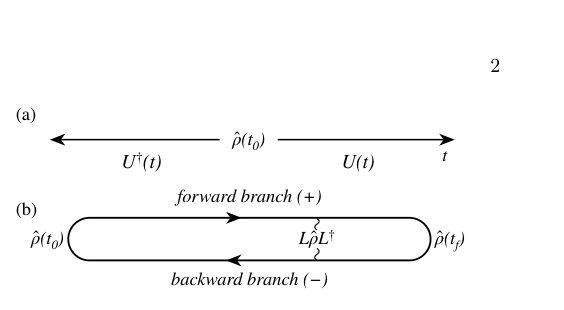
<figcaption class="paper-figure-caption"><b>Fig 1.</b> FIG. 1. The Keldysh contour for Lindblad dynamics. (a): Evolution of the density matrix, ˆρ(t) = ˆU(t) ˆρ(t0) ˆU †(t): the initial state is propagated by ˆU(t) on one side and by ˆU †(t) on the other, so its evolution comprises two histories over the same time interval. (b): The two histories folded into the closed time contour: the system travels along the forward branch (+) and returns along the backward branch (−). The initial state ˆρ(t0) joins the two branches at the initial time, and the closure of the contour at the final time is implemented by computing the trace of ˆρ(tf). Dissipation couples the branches: in the term ˆLˆρˆL†, ˆL acts on the forward and ˆL† on the backward branch...</figcaption>
</figure>
<figure class="paper-figure-card">
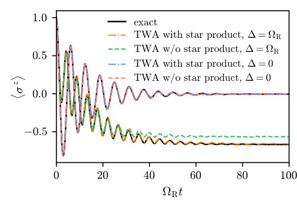
<figcaption class="paper-figure-caption"><b>Fig 2.</b> FIG. 2. Single-spin benchmark. Site magnetisation ⟨σz⟩ of a single driven-decaying spin: exact solution of the master equation (black), the stochastic equations of Table I (“TWA with star product”), and the variant with operator products replaced by ordinary multiplication of their symbols (“TWA w/o star product”) at detuning ∆= ΩR and on resonance, ∆= 0. On resonance all curves coincide, while at finite detun- ing the ordinary-product variant relaxes to a visibly displaced steady state.</figcaption>
</figure>
<figure class="paper-figure-card">
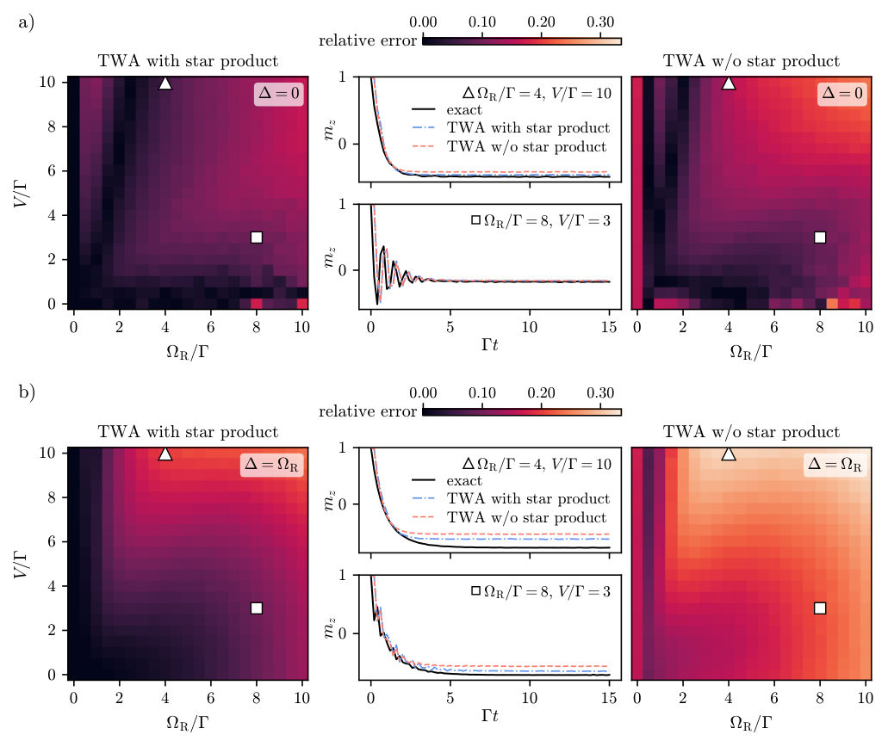
<figcaption class="paper-figure-caption"><b>Fig 3.</b> FIG. 3. Accuracy of the TWA with and without the star-product corrections. The colour maps show the relative error of the steady-state, site-averaged magnetisation of an N = 10 Rydberg chain for the TWA with the jump operators evaluated with star-product corrections (left) and without it (right) for (a) resonant drive, ∆= 0 and (b) finite detuning, ∆= ΩR. All the heatmaps share the same colour scale. The middle panels show the time evolution of mz at the parameters marked on the maps by the triangle (ΩR/Γ = 4, V/Γ = 10, strongly interacting) and the square (ΩR/Γ = 8, V/Γ = 3, weakly interacting), compared with the exact quantum jump Monte Carlo solution (black).</figcaption>
</figure>
</div>

<p><strong>Summary.</strong> This paper develops a rigorous path integral approach to apply the Truncated Wigner Approximation (TWA) to open, dissipative spin systems. By incorporating the necessary SU(2) star product into the Keldysh formulation, the authors overcome inconsistencies found in previous methods. The resulting framework provides a systematic and theoretically sound way to simulate complex quantum dynamics on curved phase spaces.</p>
<p><strong>Why it may be interesting.</strong> This work directly addresses the limitations of applying semiclassical methods like TWA to spin systems where non-commutativity is crucial; correctly handling the star product is essential for obtaining physically accurate results beyond simple mean-field treatments.</p>
<details>
<summary>Detailed structure</summary>
<p><strong>Main problem.</strong> The primary goal is to develop a consistent path integral formulation for applying the Truncated Wigner Approximation (TWA) to open, driven-dissipative interacting spin systems.</p>
<p><strong>Main result.</strong> The authors establish that incorporating the SU(2) star product into the path integral yields stochastic equations that correctly reproduce the exact dynamics of single dissipative spins, providing a unified field-theoretic foundation for TWA in this regime.</p>
<p><strong>Method.</strong> The work employs a Keldysh path-integral formulation on the continuous SU(2) phase space, adapting techniques from bosonic systems to handle spin operators via a non-commutative star product ($\star$).</p>
<p><strong>Model / system.</strong> The system under study is interacting open spin-1/2 systems, which can be realized in platforms like Rydberg atom arrays. The dynamics are governed by the Lindblad master equation.</p>
<p><strong>Key observables.</strong> Expectation values of spin operators ($\langle\hat{O}
angle$), represented as phase-space averages over the Wigner function or flattened symbol $\chi(\Omega)$.</p>
<p><strong>Important parameters / regimes.</strong> The approximation is semiclassical, involving truncations related to quantum fluctuations and the order of corrections from the star product.</p>
<p><strong>Assumptions / limitations.</strong> The core assumption involves mapping operator products onto the curved spin phase space using a 'star product' ($\star$), which must be treated carefully as it generates $\mathcal{O}(1)$ corrections unlike in simpler bosonic cases.</p>
<p><strong>Figures summary.</strong> Not specified, but the notes reference Figure 1 showing the Keldysh path integral contour and equations detailing the evolution step (Equation 20).</p>
<p><strong>Paper structure.</strong> The paper builds by first defining the SU(2) phase space, then constructing the path integral for Lindblad evolution, focusing critically on deriving and implementing the necessary star product corrections to ensure consistency with known single-spin dynamics.</p>
</details>
<details>
<summary>Abstract</summary>
<p>Phase-space approaches such as the truncated Wigner approximation (TWA) provide an efficient semiclassical framework for performing approximate simulations of the dynamics of open quantum many-body systems outside the reach of exact numerical methods but beyond the mean-field level. For bosonic systems, TWA is known to be equivalent to a Keldysh path-integral formulation truncated at second order in the so-called quantum fluctuations. This semiclassical approach provides an alternative transparent route towards approximate stochastic equations of motion, which can be efficiently solved. Here we establish the corresponding path-integral formulation for interacting open spin-$1/2$ systems using the continuous $\mathrm{SU}(2)$ phase space. We show, in particular, that a consistent treatment of dissipation requires correctly mapping operator products onto the curved spin phase space, leading to stochastic equations that coincide with those obtained from the continuous TWA formulation and thus reproduce the exact dynamics of a single dissipative spin. Our results provide a unified field-theoretic foundation for the TWA to dissipative spin dynamics and offer a systematic starting point for extensions beyond the semiclassical approximation.</p>
</details>
<p><sub><a href="#top">↑ back to top</a></sub></p>

<p><a id="paper-2607.25638"></a></p>
<h3 id="coherent-control-of-subradiant-excitations-in-atomic-rings">⭐ <a href="http://arxiv.org/abs/2607.25638v1">Coherent control of subradiant excitations in atomic rings</a></h3>
<p><strong>Highlighted author(s):</strong> Igor Lesanovsky<br>
<strong>Authors:</strong> Milena Djatchkova, Igor Lesanovsky, Beatriz Olmos<br>
<strong>Type:</strong> theory · <strong>Category:</strong> quantum information and computing · <strong>PDF:</strong> <a href="https://arxiv.org/pdf/2607.25638v1">https://arxiv.org/pdf/2607.25638v1</a><br>
<strong>Analysis basis:</strong> full PDF text, analyzed in chunks
<strong>Topic relevance:</strong> 🔥 <code>analog quantum simulation</code> <strong>4/5</strong> · 🔥 <code>correlated / nonlocal dissipation</code> <strong>4/5</strong> · <code>methods for driven-dissipative</code> <strong>3/5</strong> · <code>non-equilibrium dynamics</code> <strong>3/5</strong> · <code>Tavis-Cummings &amp; cavity-many-emitter</code> <strong>2/5</strong> · <code>driven-dissipative phase transition</code> <strong>2/5</strong> · <code>Dicke superradiance</code> <strong>1/5</strong> · <code>Keldysh / 2PI / non-Gaussian methods</code> <strong>1/5</strong> · <code>correlated cavity matter</code> <strong>1/5</strong> · <code>entanglement &amp; information structure</code> <strong>1/5</strong> · <code>exotic spin models in light-matter</code> <strong>1/5</strong> · <code>interference shaping light</code> <strong>1/5</strong> · <code>non-equilibrium universality</code> <strong>1/5</strong></p>
<div class="figure-strip-hint">↔ Scroll figures horizontally</div>
<div class="paper-figures-scroll">
<figure class="paper-figure-card">
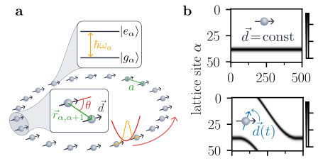
<figcaption class="paper-figure-caption"><b>Fig 1.</b> FIG. 1. Ring setup and subradiant excitation trans- port. a: Ring-shaped atomic array with interatomic spacing a and parallel in-plane transition dipoles ⃗d, enclosing an an- gle θ with the local bond direction ⃗rα,α+1. The orientation- dependent interactions generate an effective trapping poten- tial (red) for a localized subradiant collective excitation (or- ange). Adiabatically rotating the dipole orientation trans- lates the potential minimum, enabling coherent transport of the trapped excitation around the ring. b: Time evolution of the localized excitation for fixed dipoles (top) and during a full adiabatic 2π dipole rotation over τ = 400 γ−1 (bottom), for N = 50 and a = 0.08 λa. In...</figcaption>
</figure>
<figure class="paper-figure-card">
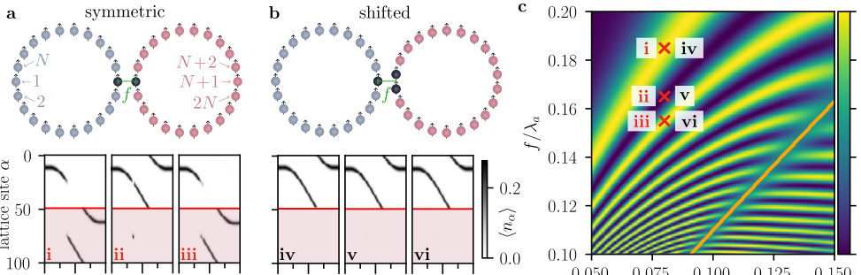
<figcaption class="paper-figure-caption"><b>Fig 2.</b> FIG. 2. Controlled excitation exchange dynamics between coupled rings. a: Symmetric configuration with axially aligned rings. b: Shifted configuration, where one ring is rotated such that the atoms at the point of closest proximity form a triangle. In both cases, the inter-ring separation is denoted as f. c: Excitation transfer probability in the symmetric configuration for N = 50, shown as a function of interatomic distance a and ring separation f. The solid orange line indicates an energy crossing between the participating eigenstates. i-iii: Representative time evolution of the site occupations for a = 0.08λa, illustrating one (f = 0.185λa), two (f = 0.165λa) and three (f = 0.155λa)...</figcaption>
</figure>
<figure class="paper-figure-card">
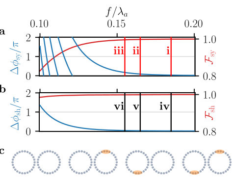
<figcaption class="paper-figure-caption"><b>Fig 3.</b> FIG. 3. Conditional phase accumulation. a,b: Interaction-induced excess phase ∆ϕ and fidelity F as a function of the inter-ring separation f for the symmetric a and shifted b configurations, with fixed interatomic spacing a = 0.08 λa. The vertical lines labeled i-vi indicate the pa- rameter values corresponding to the representative time evo- lutions shown in Fig. 2. c: Logical basis defined by the pres- ence or absence of a trapped excitation in each ring, used to interpret the symmetric and shifted protocols as complemen- tary elementary photonic operations.</figcaption>
</figure>
</div>

<p><strong>Summary.</strong> The authors theoretically demonstrate that ordered atomic rings can act as robust quantum memories and processors for photonic excitations. By controlling dipole orientation and inter-ring spacing, they achieve coherent transport and controlled interactions between stored subradiant light quanta. This establishes the platform's potential for fault-tolerant quantum information processing.</p>
<p><strong>Why it may be interesting.</strong> This work directly addresses the use of solid-state or structured matter platforms (atomic arrays) for building scalable photonic quantum circuits by leveraging engineered collective decay suppression.</p>
<details>
<summary>Detailed structure</summary>
<p><strong>Main problem.</strong> The paper demonstrates how coherent control can be achieved for subradiant excitations trapped within ordered atomic rings.</p>
<p><strong>Main result.</strong> They show that the system supports adiabatic transport around a ring, geometry-controlled transfer between neighboring rings, and interaction-induced conditional phase shifts, enabling photonic quantum information processing.</p>
<p><strong>Method.</strong> The analysis uses theoretical modeling based on the master equation and effective Hamiltonians derived for collective excitations in atomic arrays.</p>
<p><strong>Model / system.</strong> The system consists of ordered subwavelength atomic arrays, specifically ring-shaped structures containing two-level emitters. Dynamics are governed by coupling terms ($V_{\alphaeta}$) and dissipation ($\Gamma_{\alphaeta}$), analyzed within the single or two-excitation manifold.</p>
<p><strong>Key observables.</strong> Collective excitation survival probability ($P_{	ext{sur}}$), single-excitation transfer probability ($P_{tr}$), and interaction-induced excess phase ($\Delta\phi$).</p>
<p><strong>Important parameters / regimes.</strong> Interatomic separation ($r_{\alphaeta}$), dipole orientation ($  heta$), ring separation ($f$), and the requirement for subradiant protection.</p>
<p><strong>Assumptions / limitations.</strong> The analysis assumes the system remains largely confined to the single-excitation manifold, and adiabatic evolution requires slow changes relative to energy gaps.</p>
<p><strong>Figures summary.</strong> Figures illustrate excitation transport during dipole rotation (Fig. 1), controlled exchange dynamics between two rings based on geometry (Fig. 2), and the dependence of phase accumulation and fidelity on separation distance (Fig. 3).</p>
<p><strong>Paper structure.</strong> The paper progresses by first establishing single-ring adiabatic transport, then demonstrating controllable inter-ring transfer using symmetric vs. shifted geometries, and finally analyzing two-excitation dynamics to realize controlled-phase quantum gates.</p>
</details>
<details>
<summary>Abstract</summary>
<p>Collective excitations in ordered subwavelength atomic arrays can exhibit strongly suppressed radiative decay due to interference between light scattered by neighboring emitters. These so-called subradiant states make these systems a promising platform for storing and manipulating photonic excitations. The external geometry of the array, combined with dynamical control of the atomic dipole orientation, enables localized trapping and coherent transport of these subradiant excitations. Here, we theoretically demonstrate these capabilities in ring-shaped atomic arrays. Specifically, we show adiabatic transport of a localized excitation around a single ring, coherent transfer of a single excitation between two neighboring rings with geometry-controlled selectivity, and interaction-induced conditional phase shifts between two simultaneously trapped excitations in neighboring rings. The latter can be interpreted as effective controlled-phase operations between stored excitations. Together, these results demonstrate the potential of ordered atomic arrays as a platform for coherent photonic quantum information processing with dissipation-protected collective excitations.</p>
</details>
<p><sub><a href="#top">↑ back to top</a></sub></p>

<p><a id="paper-2607.25508"></a></p>
<h3 id="from-weakly-to-strongly-interacting-driven-dissipative-bosons-in-one-dimension"><a href="http://arxiv.org/abs/2607.25508v1">From weakly to strongly-interacting driven-dissipative bosons in one dimension</a></h3>
<p><strong>Authors:</strong> Martina Zündel, Loïc Herviou, Léonie Canet, Anna Minguzzi<br>
<strong>Type:</strong> theory · <strong>Category:</strong> quantum gases · <strong>PDF:</strong> <a href="https://arxiv.org/pdf/2607.25508v1">https://arxiv.org/pdf/2607.25508v1</a><br>
<strong>Analysis basis:</strong> full PDF text, analyzed in chunks
<strong>Topic relevance:</strong> 🔥 <code>methods for driven-dissipative</code> <strong>5/5</strong> · 🔥 <code>Keldysh / 2PI / non-Gaussian methods</code> <strong>4/5</strong> · 🔥 <code>analog quantum simulation</code> <strong>4/5</strong> · 🔥 <code>driven-dissipative phase transition</code> <strong>4/5</strong> · 🔥 <code>non-equilibrium dynamics</code> <strong>4/5</strong> · <code>non-equilibrium universality</code> <strong>3/5</strong> · <code>correlated / nonlocal dissipation</code> <strong>2/5</strong> · <code>Kondo &amp; dissipative impurity</code> <strong>1/5</strong> · <code>entanglement &amp; information structure</code> <strong>1/5</strong> · <code>scars &amp; prethermalization</code> <strong>1/5</strong></p>
<div class="figure-strip-hint">↔ Scroll figures horizontally</div>
<div class="paper-figures-scroll">
<figure class="paper-figure-card">
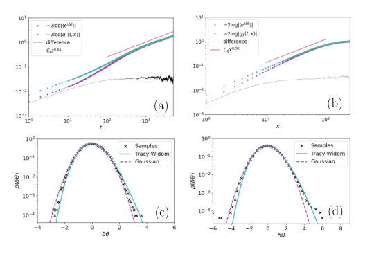
<figcaption class="paper-figure-caption"><b>Fig 1.</b> FIG. 1. (a) Temporal correlations −2log|g(1)(0, t)| (turquoise) eval- uated with respect to the reference time tstat = 1000 ps, as de- fined below Eq. 9, where the system has already reached the non- equilibrium stationary state, phase-phase correlator (purple) and their absolute difference (grey). (b) Spatial correlation −2log|g(1)(x, 0)|, phase-phase correlations, and their absolute difference, with the same color code. (c)-(d): Statistics of the phase fluctuations for ntraj = 105 trajectories; (c) at early times t ≈30, statistics inter- mediate, and (d) at t ≈2000 in the KPZ regime. The system size is taken L = 210, the other parameters are given in Eq. (20).</figcaption>
</figure>
<figure class="paper-figure-card">
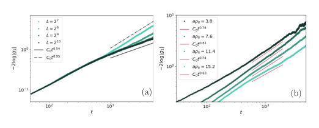
<figcaption class="paper-figure-caption"><b>Fig 2.</b> FIG. 2. The fading of the KPZ scaling towards small system sizes and low densities, keeping the remaining parameters as in Fig. 1. (a) Influence of the system size: temporal correlation for different system lengths L = 27, 28, 29, 210, zoomed into the relevant time window. The KPZ scaling is still visible for L = 28, but fades away for smaller system size L = 27. (b) Influence of the mean den- sity: Temporal correlation lowering the density by tuning the loss rate γl = 0.07, 0.07185, 0.0734, 0.07525 towards the pump thresh- old condition γl = γp. The system size is L = 28.</figcaption>
</figure>
<figure class="paper-figure-card">
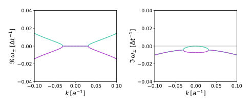
<figcaption class="paper-figure-caption"><b>Fig 3.</b> FIG. 4. Zoom on real (left panel) and imaginary (right panel) part of the Bogoliubov excitation dispersion Ω±(k) given in Eq. (24), near k ≈0, with frequency in units of the inverse time step ∆t−1 and wavevector in units of inverse lattice spacing a−1. In the right panel, the linewidth of one of the two excitation branches vanishes at k = 0, corresponding to the dissipative Goldstone mode associated with the broken U(1) symmetry in the out-of-equilibrium theory.</figcaption>
</figure>
<figure class="paper-figure-card">
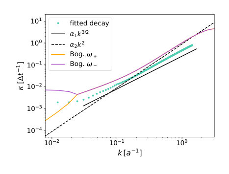
<figcaption class="paper-figure-caption"><b>Fig 4.</b> FIG. 5. Width of spectral lines extracted from the spectrum shown in Fig. 3 for the parameters in (20) (dots) and from the Bogoliubov theory (orange and magenta solid lines). The width are obtained by fitting Lorentzian curves for each k-slice. The black dashed line in- dicates the κ(k) ∼k2 behavior predicted by Bogoliubov theory and the black solid line indicates the κ(k) ∼k3/2 behavior expected for the KPZ regime.</figcaption>
</figure>
<figure class="paper-figure-card">
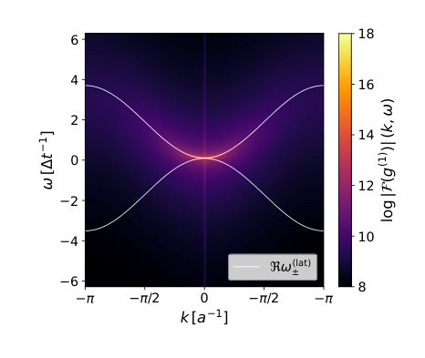
<figcaption class="paper-figure-caption"><b>Fig 5.</b> FIG. 3. Spectral function from semi-classical simulation, in the frequency-momentum plane, with wavevector in units of inverse lat- tice spacing a−1 and frequency in units of inverse time step ∆t. The parameters are given in (20) and system length L = 210. The result is overlaid with the Bogoliubov prediction (24) for the excitation dis- persion of lattice bosons (white line).</figcaption>
</figure>
</div>

<p><strong>Summary.</strong> The paper investigates the complex dynamics of bosons in a 1D lattice subject to pumping and dissipation. By employing advanced theoretical tools like the Keldysh formalism and tensor networks, the authors characterize how the system behaves when transitioning from weakly to strongly interacting regimes. The findings reveal universal scaling behaviors (KPZ) in some limits while demonstrating fundamental differences between quantum and classical descriptions.</p>
<p><strong>Why it may be interesting.</strong> This work directly addresses non-equilibrium dynamics in bosonic systems, which is central to modern AMO physics research involving driven quantum simulators or optical lattices.</p>
<details>
<summary>Detailed structure</summary>
<p><strong>Main problem.</strong> The study characterizes driven-dissipative bosonic systems in one dimension across varying filling and interaction strengths, focusing on the transition between weakly and strongly interacting regimes.</p>
<p><strong>Main result.</strong> The system exhibits Kardar-Parisi-Zhang (KPZ) scaling in the weak interaction/large filling regime, while strong interactions reveal a change of nature in excitations compared to mean-field predictions.</p>
<p><strong>Method.</strong> A combination of Keldysh formalism for deriving actions, stochastic semi-classical simulations, and tensor network methods are employed to analyze quantum dynamics.</p>
<p><strong>Model / system.</strong> The model is a one-dimensional Bose-Hubbard system subjected to incoherent pumping and various particle losses (one-body and two-body). The evolution is governed by the Lindblad master equation or its semi-classical/Keldysh approximations.</p>
<p><strong>Key observables.</strong> Two-point space-time correlations, spectral function linewidth $A(\omega, k)$, and first-order correlation function $g^{(1)}(x, t)$.</p>
<p><strong>Important parameters / regimes.</strong> Filling (density), interaction strength ($U$), pumping rate ($\gamma_p$), and loss rates ($\gamma_l, \gamma_{2l}$). Key regimes include large filling/weak interaction and weak filling/strong interaction.</p>
<p><strong>Assumptions / limitations.</strong> The semi-classical limit is used for some analyses, which neglects certain non-linear quantum field terms. The analysis often focuses on stationary or quasi-stationary correlation regimes.</p>
<p><strong>Figures summary.</strong> Figure 14 compares semiclassical and quantum predictions for density distributions ($
ho$) and occupation probabilities ($p_N$) across different system sizes and loss mechanisms.</p>
<p><strong>Paper structure.</strong> The paper systematically analyzes the dynamics by first establishing the theoretical framework (Keldysh formalism, Lindblad equation), then investigating specific regimes (weak vs. strong coupling) using appropriate tools (semi-classical vs. tensor networks), and finally comparing results to highlight deviations from mean-field theory.</p>
</details>
<details>
<summary>Abstract</summary>
<p>We consider a one-dimensional driven-dissipative Bose-Hubbard model subjected to incoherent pump and one- and two-body losses, and analyze it by studying its two-point space-time correlations. By employing a combination of numerical methods, such as stochastic semi-classical simulations and tensor network methods, as well as perturbation theory within the Keldysh formalism, we characterize the system at varying filling and interaction strength. We present results for two complementary regimes: i) at large filling and weak interactions, where we show that Kardar-Parisi-Zhang scaling is visible in the linewidth of the spectral function and ii) at weak filling and strong interactions, where we analyze what remains of the mean field transition and identify a change of nature of the excitations. Our study covers two important regions of the phase diagram of such a system.</p>
</details>
<p><sub><a href="#top">↑ back to top</a></sub></p>

<p><a id="paper-2607.24937"></a></p>
<h3 id="resolving-structure-in-prethermal-floquet-dynamics-with-precision-quantum-computation"><a href="http://arxiv.org/abs/2607.24937v1">Resolving Structure in Prethermal Floquet Dynamics with Precision Quantum Computation</a></h3>
<p><strong>Authors:</strong> Eyal Leviatan, Tasneem Watad, Roy Perry, Lukas Broers, Mohammed Zuhair Mullath, Ori Alberton, Itai Arad, Yosi Atia, Eyal Bairey, Shaul Barkan, Matan Ben Dov, Asaf Berkovitch, Ewout van den Berg, Itsik Cohen, Omri Golan, Ilya Gurwich, Avieli Haber, Barak A. Katzir, Oded Kenneth, Roei Levi, Yotam Y. Lifshitz, Yaron Lukovsky, Ron Melcer, Adiel Meyer, Boris Muratov, Aviad Panahi, Gili Schul, Tali Shnaider, Maor Shutman, Alireza Seif, Tomonori Shirakawa, Asif Sinay, Vincent P. Su, Hayk Tepanyan, Omri Trebitch, Assaf Zubida, Dorit Aharonov, Hrant Gharibyan, Abhinav Kandala, Seiji Yunoki, Netanel H. Lindner<br>
<strong>Type:</strong> both · <strong>Category:</strong> statistical mechanics · <strong>PDF:</strong> <a href="https://arxiv.org/pdf/2607.24937v1">https://arxiv.org/pdf/2607.24937v1</a><br>
<strong>Analysis basis:</strong> full PDF text, analyzed in chunks
<strong>Topic relevance:</strong> 🔥 <code>scars &amp; prethermalization</code> <strong>5/5</strong> · 🔥 <code>analog quantum simulation</code> <strong>4/5</strong> · 🔥 <code>non-equilibrium dynamics</code> <strong>4/5</strong> · <code>driven-dissipative phase transition</code> <strong>3/5</strong> · <code>exotic spin models in light-matter</code> <strong>3/5</strong> · <code>methods for driven-dissipative</code> <strong>3/5</strong> · <code>QC/QI experiment</code> <strong>2/5</strong> · <code>non-equilibrium universality</code> <strong>2/5</strong> · <code>Keldysh / 2PI / non-Gaussian methods</code> <strong>1/5</strong> · <code>entanglement &amp; information structure</code> <strong>1/5</strong> · <code>quantum measurements</code> <strong>1/5</strong></p>
<div class="figure-strip-hint">↔ Scroll figures horizontally</div>
<div class="paper-figures-scroll">
<figure class="paper-figure-card">
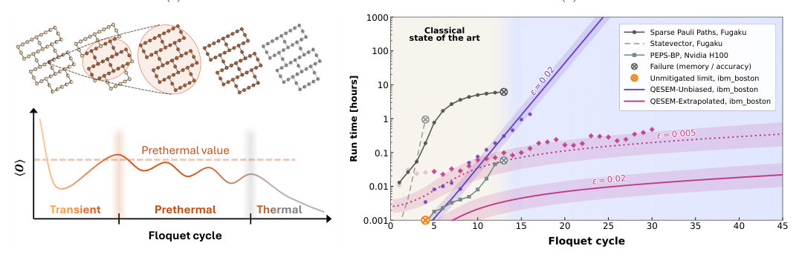
<figcaption class="paper-figure-caption"><b>Fig 1.</b> FIG. 1: (a) Schematic of Floquet prethermalization. A generic local operator O spreads and develops many-body complexity across a 51-qubit heavy-hex patch, one of the geometries used in the experiments (top). After an initial transient, its expectation value ⟨O⟩exhibits long-lived structured oscillations about a prethermal value, before eventual heating drives the system to a featureless thermal state (bottom). (b) Runtime and accuracy frontier for estimating the magnetization of the 51-qubit Floquet circuits shown in Fig. 3a. Unmitigated execution loses accuracy by cycle 4 (yellow marker), whereas QESEM extends the accessible depth by trading additional QPU sampling time for reduced bias....</figcaption>
</figure>
<figure class="paper-figure-card">
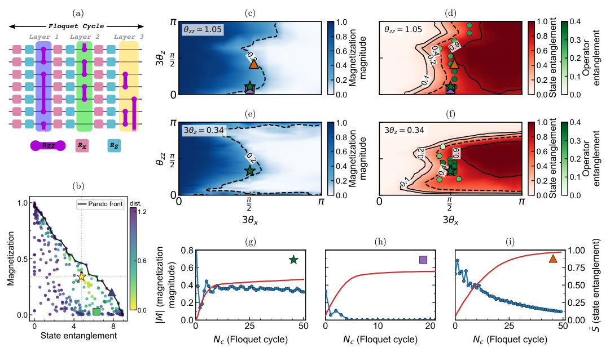
<figcaption class="paper-figure-caption"><b>Fig 2.</b> FIG. 2: (a) One Floquet cycle of the driven magnet. Each cycle consists of parallel single-qubit X and Z rotation layers on all qubits interleaved with three edge-coloured layers of nearest-neighbour fractional-angle ZZ rotations. (b) Tradeoff between magnetization and state entanglement entropy in 21-qubit exact simulations after 30 Floquet cycles. Each point corresponds to one choice of Floquet parameters in the scan; colour indicates distance, in parameter space, from the chosen set of parameters, marked by the star and located near the Pareto front. (c) Retained magnetization after 30 Floquet cycles in the (3θx, 3θz) plane at fixed θzz = 1.05, from the same 21-qubit exact simulations as...</figcaption>
</figure>
<figure class="paper-figure-card">
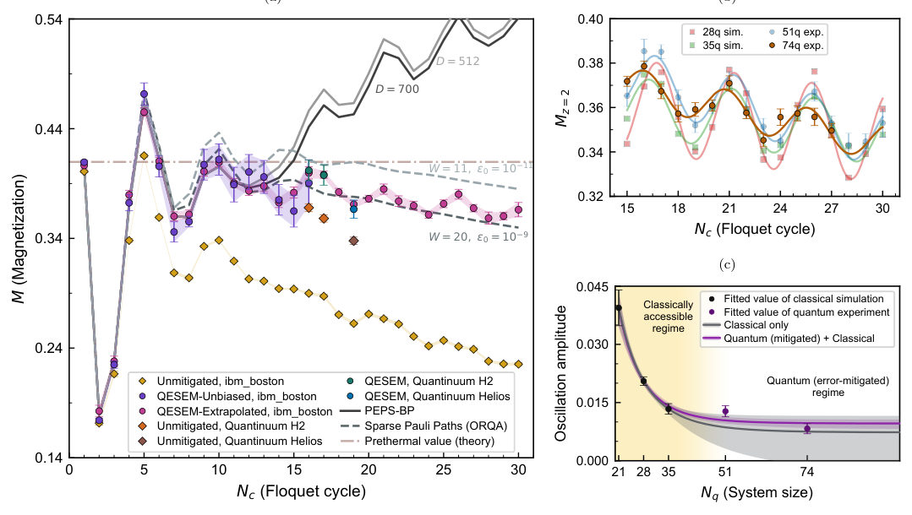
<figcaption class="paper-figure-caption"><b>Fig 3.</b> FIG. 3: (a) Magnetization versus Floquet cycle for the 51-qubit system. Vertical error bars denote one-standard-deviation statistical uncertainties, including sampling overhead for the error-mitigated data. The unmitigated results decay rapidly, while QESEM-Unbiased agrees with PEPS-BP at early times, where the D = 512 and D = 700 curves coincide, and continues to give stable mitigated estimates for several cycles after they separate. QESEM-Extrapolated extends the mitigated dynamics to later cycles, resolving slow relaxation and long-time oscillations. Sparse Pauli-path results from two truncation choices fail to provide a converged late-cycle reference and do not reproduce the late-cycle...</figcaption>
</figure>
<figure class="paper-figure-card">
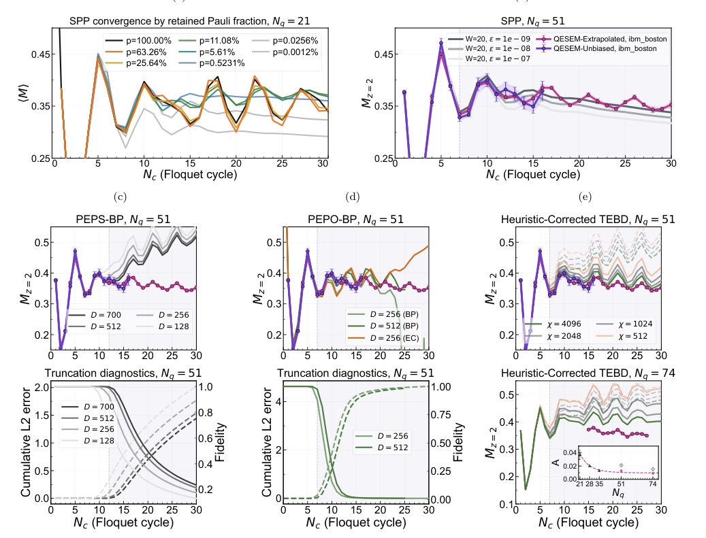
<figcaption class="paper-figure-caption"><b>Fig 4.</b> FIG. 4: (a) Magnetization dynamics for the 21-qubit patch obtained with the ORQA SPP method on the Fugaku supercomputer for different retained Pauli fractions, p, of the complete Pauli operator space. The solid black curve shows the exact statevector evolution. (b)–(e) Comparison of the coordination-two magnetization, Mz=2, as a function of Floquet cycle, obtained using four classical simulation methods and compared with the error-mitigated QESEM experiments (purple: QESEM-Unbiased; magenta: QESEM-Extrapolated). (b) SPP results for the 51-qubit patch. Gray curves show SPP simulations performed with ORQA using W = 20 and different coefficient-truncation thresholds. Although SPP agrees with...</figcaption>
</figure>
</div>

<p><strong>Summary.</strong> This paper uses error-mitigated quantum computing on superconducting hardware to study prethermal dynamics in a Floquet Ising magnet. The researchers successfully measured long-lived oscillations up to 74 qubits, demonstrating that these phenomena persist into the thermodynamic limit where classical simulations fail. It establishes error-mitigated quantum processors as reliable tools for discovering new physics in non-equilibrium matter.</p>
<p><strong>Why it may be interesting.</strong> It provides concrete evidence that quantum computation can probe non-equilibrium physics regimes (prethermalization) inaccessible to current best classical computational resources, directly impacting the study of open quantum systems dynamics.</p>
<details>
<summary>Detailed structure</summary>
<p><strong>Main problem.</strong> The central challenge is accessing and characterizing prethermal dynamics in periodically driven interacting quantum many-body systems, where classical methods fail at required system sizes/times.</p>
<p><strong>Main result.</strong> The authors successfully measured long-lived subharmonic prethermal oscillations on up to 74 qubits using error mitigation, suggesting these oscillatory responses persist into the thermodynamic limit for heavy-hex ladders.</p>
<p><strong>Method.</strong> The work combines advanced quantum hardware measurements (using QESEM error mitigation) with rigorous comparison against state-of-the-art classical simulations like tensor networks and Pauli-path methods.</p>
<p><strong>Model / system.</strong> The study investigates a Floquet Ising magnet realized on a heavy-hex lattice, focusing on its non-equilibrium dynamics under periodic driving.</p>
<p><strong>Key observables.</strong> Magnetization ($M$), prethermal oscillation amplitude decay with system size, and simulation fidelity measures.</p>
<p><strong>Important parameters / regimes.</strong> System sizes up to 74 qubits; specific parameter regimes ($ heta_x \approx \pi/6$, $    heta_z \approx \pi/27$, etc.) that yield structured dynamics.</p>
<p><strong>Assumptions / limitations.</strong> The reliability of results hinges on the successful application and validation of advanced error mitigation techniques (QESEM) across multiple quantum hardware platforms.</p>
<p><strong>Figures summary.</strong> Figures compare simulation runtimes and accuracy frontiers between classical methods (PEPS-BP, Statevector) and QESEM measurements; other figures show parameter scans and universal collapse plots validating error models.</p>
<p><strong>Paper structure.</strong> The paper establishes the physical problem, details the advanced quantum measurement techniques required to overcome hardware noise, presents results showing measurable prethermal features beyond classical simulation limits, and concludes by establishing error-mitigated quantum processors as quantitative scientific tools.</p>
</details>
<details>
<summary>Abstract</summary>
<p>Periodically driven interacting quantum many-body systems can exhibit long-lived prethermal dynamics, where local observables retain coherent structure even as entanglement and operator complexity grow. Accessing this regime at the system sizes and times needed to determine physical properties of the prethermal state remains a central challenge: state-of-the-art classical methods become unreliable, while noise in quantum hardware degrades observable expectation values. Here we overcome these limitations for a Floquet Ising magnet realized on a heavy-hex lattice. Using the advanced error mitigation software QESEM on an IBM Heron r3 superconducting quantum processor, we measure magnetization dynamics with percent-level precision and resolve long-lived subharmonic prethermal oscillations in systems of up to 74 qubits. These experiments reach regimes for which leading tensor-network simulations fail to converge, while sparse Pauli-path simulations remain strongly truncation dependent despite extensive computations on advanced GPUs and the Fugaku supercomputer. Leveraging this quantum-accessible regime, we extend finite-size scaling to larger systems and find an unexpectedly slow decrease of the oscillation amplitude with system size, providing strong evidence that this oscillatory response persists in the thermodynamic limit of heavy-hex ladders. A hierarchy of mitigation and validation tests, including unbiased error mitigation, agreement between independent mitigation estimators, noise-model validation on the superconducting hardware, and cross-platform corroboration at selected Floquet cycles on Quantinuum System Model H2 and Quantinuum Helios trapped-ion hardware, supports the reliability of these findings. Our work establishes error-mitigated quantum processors as quantitative scientific instruments for discovering new physics in non-equilibrium quantum matter.</p>
</details>
<p><sub><a href="#top">↑ back to top</a></sub></p>

<p><a id="paper-2607.25834"></a></p>
<h3 id="lowering-the-implementation-barrier-of-neutral-atom-quantum-computing-with-agentic-workflows"><a href="http://arxiv.org/abs/2607.25834v1">Lowering the implementation barrier of neutral-atom quantum computing with agentic workflows</a></h3>
<p><strong>Authors:</strong> Constantin Dalyac, Alexandre Dauphin, Loïc Henriet, Christophe Jurczak<br>
<strong>Type:</strong> both · <strong>Category:</strong> other · <strong>PDF:</strong> <a href="https://arxiv.org/pdf/2607.25834v1">https://arxiv.org/pdf/2607.25834v1</a><br>
<strong>Analysis basis:</strong> full PDF text, analyzed in chunks
<strong>Topic relevance:</strong> 🔥 <code>Rydberg arrays</code> <strong>5/5</strong> · 🔥 <code>QC/QI experiment</code> <strong>4/5</strong> · 🔥 <code>analog quantum simulation</code> <strong>4/5</strong> · <code>methods for driven-dissipative</code> <strong>3/5</strong> · <code>non-equilibrium dynamics</code> <strong>2/5</strong> · <code>Keldysh / 2PI / non-Gaussian methods</code> <strong>1/5</strong> · <code>correlated / nonlocal dissipation</code> <strong>1/5</strong> · <code>driven-dissipative phase transition</code> <strong>1/5</strong> · <code>entanglement &amp; information structure</code> <strong>1/5</strong></p>
<div class="figure-strip-hint">↔ Scroll figures horizontally</div>
<div class="paper-figures-scroll">
<figure class="paper-figure-card">
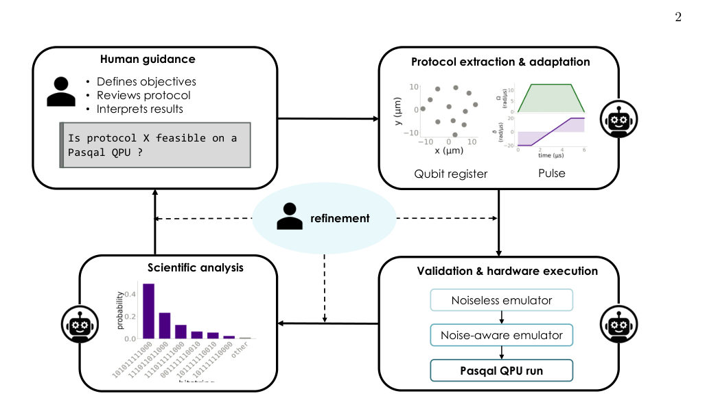
<figcaption class="paper-figure-caption"><b>Fig 1.</b> FIG. 1. AI-assisted workflow for translating quantum protocols into hardware experiments. A researcher defines the scientific objective and interacts with the AI workflow through natural-language instructions. The AI extracts or generates an experimental protocol, including the neutral-atom register and pulse sequence, from a scientific publication, patent, or user request. The pulse sequence is determined by the qubit register, the time evolution of the Rabi frequency Ω(rad.µs−1) and the detuning δ (rad.µs−1). Before execution on quantum hardware, the protocol is validated using noiseless and noise-aware emulation to identify implementation issues and support iterative refinement. Once...</figcaption>
</figure>
<figure class="paper-figure-card">
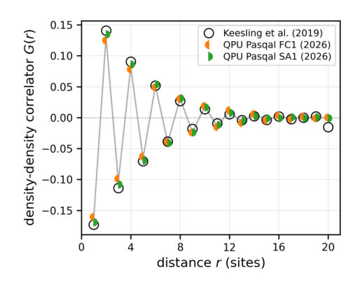
<figcaption class="paper-figure-caption"><b>Fig 2.</b> FIG. 2. Density-density correlator G(r) in the saturated Z2-ordered phase as a function of the distance r in num- ber of sites. Open black circles: values taken from Fig. 1d of Keesling et al. [32] (51-atom chain, fitted ξ = 3.9 sites). Half-filled markers: this work, on a 56-atom ring on Pasqal QPU FC1 (orange, 2000 shots, ξ = 4.2) and a 96-atom ring on Pasqal QPU SA1 (green, 1000 shots, ξ = 4.2). The grey line is a guide to the eye. All three datasets show that the saturated ordered-phase correlator is a robust observable, re- produced by our agentic workflow on two Pasqal QPUs, 7 years after the landmark experiment.</figcaption>
</figure>
<figure class="paper-figure-card">
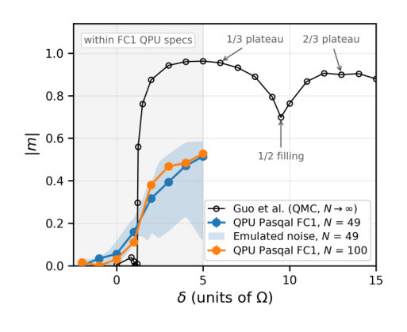
<figcaption class="paper-figure-caption"><b>Fig 3.</b> FIG. 3. Normalised order parameter |m| versus δ/Ωon the bulk sublattice. Open black circles: QMC in the thermody- namic limit (Guo et al. [33]). Filled circles: QPU Pasqal FC1 at N = 49 (blue) and N = 100 (orange), on rhombic L × L triangular registers with L ≡1 mod 3, so the open boundary pins a single √</figcaption>
</figure>
<figure class="paper-figure-card">
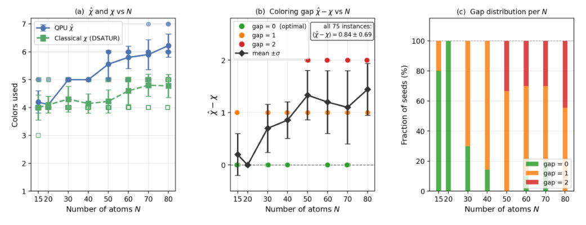
<figcaption class="paper-figure-caption"><b>Fig 4.</b> FIG. 4. Example C, QPU beam-search graph coloring on FC1 (unit-disk graphs at density 0.35, blockade radius Rb=10 µm; beam-width w=3, ns=200 shots/round, 75 instances). (a) QPU estimate ˆχ and classical optimum χ (DSATUR) vs. N; lines show mean ±σ, dots show per-instance values. (b) Coloring gap ˆχ−χ per instance (coloured by gap value) and mean ±σ; the gap is zero at N=20 and never exceeds 2. (c) Fraction of seeds at each gap value per N.</figcaption>
</figure>
</div>

<p><strong>Summary.</strong> The paper introduces an agentic workflow designed to automate the complex process of turning theoretical quantum protocols into executable experiments on neutral-atom quantum processors. By successfully running multiple case studies and screening hundreds of papers, it proves that AI tools can bridge the gap between theory and hardware. This significantly lowers the barrier for researchers in AMO physics to conduct cutting-edge quantum simulations.</p>
<p><strong>Why it may be interesting.</strong> This work directly addresses the practical implementation gap for AMO theorists. By automating the engineering steps—from protocol extraction to noise modeling on specific hardware like Pasqal QPUs—it allows theorists to rapidly test feasibility across a much broader range of physical models.</p>
<details>
<summary>Detailed structure</summary>
<p><strong>Main problem.</strong> The major bottleneck in quantum research is translating theoretical protocols into executable hardware experiments due to required expertise across multiple domains.</p>
<p><strong>Main result.</strong> Agentic workflows provide a practical bridge by automating the pipeline from scientific paper to QPU campaign, significantly accelerating the path from theory to physical realization.</p>
<p><strong>Method.</strong> The authors developed and demonstrated an agentic workflow that automates protocol extraction, hardware mapping, simulation (noiseless/noise-aware), and execution on neutral-atom quantum processors.</p>
<p><strong>Model / system.</strong> The work focuses on neutral-atom Quantum Processing Units (QPUs) utilizing Rydberg arrays to realize programmable many-body Hamiltonians. The system is controlled by parameters like Rabi frequency, detuning, and qubit geometry.</p>
<p><strong>Key observables.</strong> Density-density correlator G(r), structure factor, mean magnetization m, and comparison of measured data against noiseless simulation envelopes.</p>
<p><strong>Important parameters / regimes.</strong> Device constraints include maximum atom number, achievable detuning range ($    ext{FC1}: |\delta|/2\pi \le 10  ext{ MHz}$), and interaction types (e.g., Ising vs XY).</p>
<p><strong>Assumptions / limitations.</strong> Human domain expertise remains crucial for validating scientific assumptions, selecting physically meaningful observables, and interpreting complex results.</p>
<p><strong>Figures summary.</strong> Figure 2 compares literature values of the density-density correlator G(r) with measurements on FC1 and SA1 for the $Z_2$ phase. Figure 3 (mentioned) compares QMC data to QPU data for the $1/3$ plateau.</p>
<p><strong>Paper structure.</strong> The paper introduces the agentic workflow, demonstrates its use in three case studies from literature (many-body physics and optimization), details the process of screening existing arXiv papers, and concludes by outlining the shift in the research bottleneck to scientific judgment.</p>
</details>
<details>
<summary>Abstract</summary>
<p>Quantum computers are moving from research laboratories to industrial machines accessible via the cloud and integrated into high-performance computing facilities. However, translating theoretical quantum protocols into hardware experiments remains a major bottleneck, requiring expertise across protocol design, compilation, simulation, and cloud execution. Here, we introduce an agentic workflow that automates this pipeline on neutral-atom quantum processors (here two Pasqal QPUs available on the cloud) while keeping the researcher in the loop for critical validation. In three case studies from many-body physics and optimization, the agent went from published paper or patent to a QPU campaign run overnight. In particular, human intervention was crucial to ensure scientific validity: the agent selected an inadequate observable in one experiment and constructed a plausible but incorrect hardware diagnosis in another, with both failures detected only through domain-expert review. Finally, we use a second agent to classify a corpus of 633 Rydberg-array arXiv papers and show that nearly half are implementable on present-day QPUs while identifying specific hardware upgrades needed for the rest. Together, these results demonstrate that agentic workflows provide a practical bridge between theoretical ideas and physical hardware, opening quantum experimentation to a much broader scientific community.</p>
</details>
<p><sub><a href="#top">↑ back to top</a></sub></p>

<p><a id="paper-2607.25902"></a></p>
<h3 id="non-monotonic-diffusion-from-nonequilibrium-driving"><a href="http://arxiv.org/abs/2607.25902v1">Non-monotonic diffusion from nonequilibrium driving</a></h3>
<p><strong>Authors:</strong> Manish Patel, Ritwick Sarkar, Urna Basu, Debasish Chaudhuri<br>
<strong>Type:</strong> theory · <strong>Category:</strong> statistical mechanics · <strong>PDF:</strong> <a href="https://arxiv.org/pdf/2607.25902v1">https://arxiv.org/pdf/2607.25902v1</a><br>
<strong>Analysis basis:</strong> full PDF text, analyzed in chunks
<strong>Topic relevance:</strong> 🔥 <code>non-equilibrium dynamics</code> <strong>5/5</strong> · 🔥 <code>non-equilibrium universality</code> <strong>4/5</strong> · <code>Keldysh / 2PI / non-Gaussian methods</code> <strong>3/5</strong> · <code>driven-dissipative phase transition</code> <strong>3/5</strong> · <code>methods for driven-dissipative</code> <strong>3/5</strong> · <code>Frenkel-Kontorova</code> <strong>1/5</strong> · <code>analog quantum simulation</code> <strong>1/5</strong> · <code>correlated / nonlocal dissipation</code> <strong>1/5</strong></p>
<div class="figure-strip-hint">↔ Scroll figures horizontally</div>
<div class="paper-figures-scroll">
<figure class="paper-figure-card">
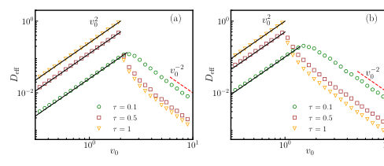
<figcaption class="paper-figure-caption"><b>Fig 1.</b> FIG. 1. Behaviour of effective diffusion coefficient for D = 0: Plot of Deff as a function of self-propulsion speed v0 for different persistence times τ for (a) the reciprocal case µ = 1 and (b) for the non-reciprocal case µ = 0. Here we have taken L = 10, λ = 1, and k = 1. The black solid lines correspond to the theoretical prediction Eq. (9).</figcaption>
</figure>
<figure class="paper-figure-card">
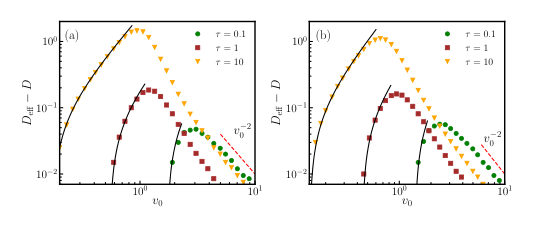
<figcaption class="paper-figure-caption"><b>Fig 2.</b> FIG. 2. Behaviour of effective diffusion coefficient for D &gt; 0: Plot of Deff −D versus self-propulsion speed v0 for different persistence times τ and (a) for reciprocal interaction µ = 1, and (b) for non-reciprocal interaction with µ = 0.5, respec- tively. The black solid lines in both panels correspond to the analytical prediction Eq. (9) with respective values of µ. The other parameters used are D = 0.1, L = 10, λ = 1, and k = 1.</figcaption>
</figure>
<figure class="paper-figure-card">
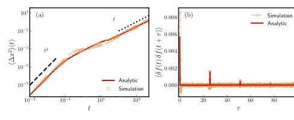
<figcaption class="paper-figure-caption"><b>Fig 3.</b> FIG. 3. Mean-squared displacement and two-time force corre- lation as a function of time. The line plots in (a) and (b) are obtained from Eq. (17) and Eq. (15) with parameter fitting f0 = 0.66, σ0 = 0.17, and using n = 300 modes, respectively. The points denote the result from the simulation obtained at parameter values v0 = 5, L = 128, τ = 10, µ = 1, k = 1, D = 0, and λ = 1.</figcaption>
</figure>
<figure class="paper-figure-card">
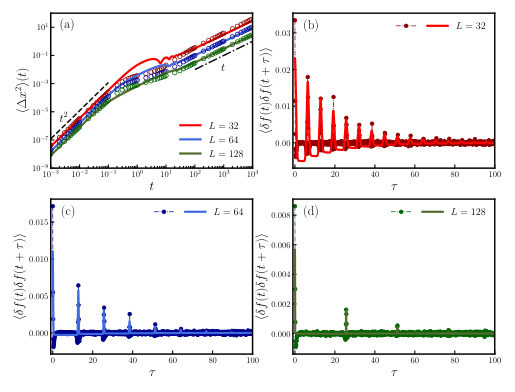
<figcaption class="paper-figure-caption"><b>Fig 4.</b> FIG. 4. Mean-squared displacement and two-time force cor- relation. The solid lines in (a) are obtained from Eq. (17), while those in (b)–(d) follow Eq. (15) using fitted parameters f0 = 2.44, σ0 = 1.82 for L = 32, f0 = 1.22, σ0 = 0.58 for L = 64, and f0 = 0.66, σ0 = 0.17 for L = 128. Both expres- sions are evaluated using n = 300 modes. Symbols denote simulations with v0 = 5, τ = 10, µ = 1, k = 1, D = 0, and λ = 1.</figcaption>
</figure>
<figure class="paper-figure-card">
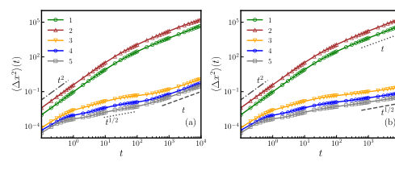
<figcaption class="paper-figure-caption"><b>Fig 5.</b> FIG. 5. Active driving: Mean-squared displacement ⟨∆x2⟩(t) versus time t for (a) periodic boundary in unwrapped coor- dinates, and (b) open boundary. The parameter values are λ = 1, k = 1, L = 512, τ = 10, D = 0. The inset labels rep- resent the value of self-propulsion speed v0, and the plots are obtained from numerical simulation.</figcaption>
</figure>
</div>

<p><strong>Summary.</strong> This paper develops a unified theoretical framework to describe the stochastic dynamics of interacting particles subjected to nonequilibrium driving, especially when interactions are nonreciprocal. The key finding is that the effective diffusion constant exhibits a nonmonotonic dependence on the driving strength, leading to both enhanced and suppressed transport regimes. By analyzing these effects in active matter models, the authors establish a general mechanism governing transport under various forms of external forcing.</p>
<p><strong>Why it may be interesting.</strong> This work provides quantitative tools to analyze transport phenomena driven by non-equilibrium forces, which is highly relevant to understanding energy dissipation and particle motion in complex systems studied using AMO techniques (e.g., engineered potentials or external fields).</p>
<details>
<summary>Detailed structure</summary>
<p><strong>Main problem.</strong> The study addresses the fundamental challenge of understanding stochastic dynamics for interacting particles operating far from thermodynamic equilibrium, particularly when nonreciprocal interactions are present.</p>
<p><strong>Main result.</strong> The effective diffusivity exhibits a nonmonotonic dependence on driving activity, showing both enhancement and suppression of transport. This behavior is captured by a unified framework applicable to active and passive nonequilibrium driving.</p>
<p><strong>Method.</strong> The authors develop a theoretical framework using Langevin dynamics approximations (harmonic approximation) and analyze the Mean-Squared Displacement (MSD) via two-time force correlations.</p>
<p><strong>Model / system.</strong> The model consists of interacting particles on a periodic ring, where one particle is passive (coupled to thermal noise) and the other is active (e.g., Run-and-Tumble dynamics). The interaction strength and reciprocity are controlled by parameters like $\mu$ and $v_0$.</p>
<p><strong>Key observables.</strong> Effective diffusivity ($D_{	ext{eff}}$), Mean-Squared Displacement ($\langle\Delta x^2
angle(t)$), and the two-time force correlation function.</p>
<p><strong>Important parameters / regimes.</strong> Self-propulsion speed ($v_0$), bare diffusivities ($D, D_0$), persistence time ($    au$), and the reciprocity parameter ($\mu$).</p>
<p><strong>Assumptions / limitations.</strong> The analysis relies on approximations such as using the harmonic approximation for interactions and neglecting interaction forces in certain high-diffusivity limits.</p>
<p><strong>Figures summary.</strong> Figures 1 and 2 numerically demonstrate $D_{	ext{eff}}$ vs. $v_0$, showing nonmonotonic behavior (increase, peak, decrease) compared to analytical predictions derived from the low-activity regime.</p>
<p><strong>Paper structure.</strong> The paper progresses by first establishing a general framework for interacting particles with both reciprocal and nonreciprocal couplings. It then derives specific analytical results for the effective diffusivity in the weak coupling limit, before generalizing the findings to compare active driving against passive (high-temperature) nonequilibrium driving scenarios.</p>
</details>
<details>
<summary>Abstract</summary>
<p>The stochastic dynamics of interacting particles far from equilibrium remains a fundamental challenge in statistical physics. While reciprocal interactions often permit effective one-body descriptions, such reductions generally fail for nonreciprocal interactions, which are ubiquitous in driven and active systems. We develop a unified theoretical framework for interacting particles with reciprocal and nonreciprocal couplings, applicable to the principal classes of active matter, including run-and-tumble, active Brownian, and active Ornstein-Uhlenbeck particles. As a minimal example, we study a passive particle driven by an active particle. On a periodic ring, we show analytically that the driven particle is always diffusive at long times, independent of the microscopic driving mechanism. Analytical predictions and numerical simulations reveal a nonmonotonic dependence of the effective diffusivity on the driving activity, giving rise to both enhanced and suppressed transport. Remarkably, the same behavior occurs in an equilibrium system driven out of equilibrium by coupling the driving particle to a higher local temperature. Our framework quantitatively captures both systems, identifies the common mechanism underlying the nonmonotonic transport, and establishes a unified description of transport under active and passive nonequilibrium driving.</p>
</details>
<p><sub><a href="#top">↑ back to top</a></sub></p>

<p><a id="paper-2607.25661"></a></p>
<h3 id="discrete-power-law-decay-of-subsystem-distance-after-a-quantum-quench"><a href="http://arxiv.org/abs/2607.25661v1">Discrete power-law decay of subsystem distance after a quantum quench</a></h3>
<p><strong>Authors:</strong> Bin Sui, Jiaju Zhang<br>
<strong>Type:</strong> theory · <strong>Category:</strong> statistical mechanics · <strong>PDF:</strong> <a href="https://arxiv.org/pdf/2607.25661v1">https://arxiv.org/pdf/2607.25661v1</a><br>
<strong>Analysis basis:</strong> full PDF text, analyzed in chunks
<strong>Topic relevance:</strong> 🔥 <code>non-equilibrium dynamics</code> <strong>5/5</strong> · 🔥 <code>entanglement &amp; information structure</code> <strong>4/5</strong> · 🔥 <code>non-equilibrium universality</code> <strong>4/5</strong> · <code>scars &amp; prethermalization</code> <strong>2/5</strong> · <code>Keldysh / 2PI / non-Gaussian methods</code> <strong>1/5</strong> · <code>analog quantum simulation</code> <strong>1/5</strong> · <code>correlated / nonlocal dissipation</code> <strong>1/5</strong> · <code>driven-dissipative phase transition</code> <strong>1/5</strong> · <code>methods for driven-dissipative</code> <strong>1/5</strong></p>
<div class="figure-strip-hint">↔ Scroll figures horizontally</div>
<div class="paper-figures-scroll">
<figure class="paper-figure-card">
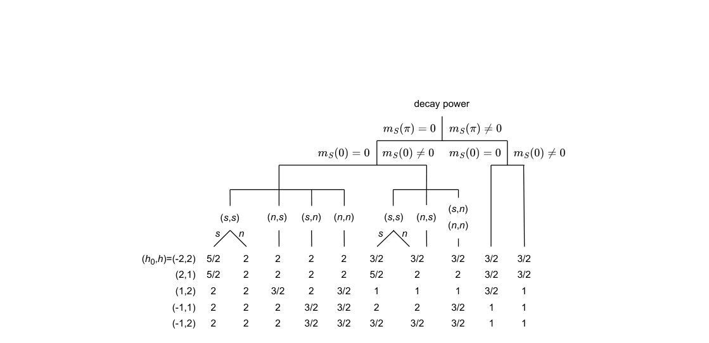
<figcaption class="paper-figure-caption"><b>Fig 1.</b> Figure 2: Flowchart for identifying discrete decay exponents for states with continuous mS(φ) and finite m′ S(φ). The label (s/n, s/n) encodes the smoothness of mS(φ) at the boundary points φ = 0 and φ = π, respectively. The single labels s and n denote global smoothness and the presence of non-smooth points, respectively, for the interior interval φ ∈(0, π).</figcaption>
</figure>
<figure class="paper-figure-card">
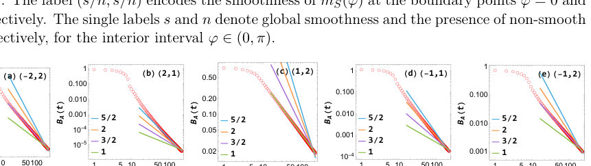
<figcaption class="paper-figure-caption"><b>Fig 2.</b> Figure 3: Decay of the subsystem Bures distance (empty red circles) following a global quench in the infinite Ising chain. Panels from left to right correspond to quench parameter sets (h0, h) = (−2, 2), (2, 1), (1, 2), (−1, 1), and (−1, 2), respectively. Solid lines denote power-law fits with discrete decay exponents 1, 3/2, 2, and 5/2. The initial state is m(φ) = 1</figcaption>
</figure>
<figure class="paper-figure-card">
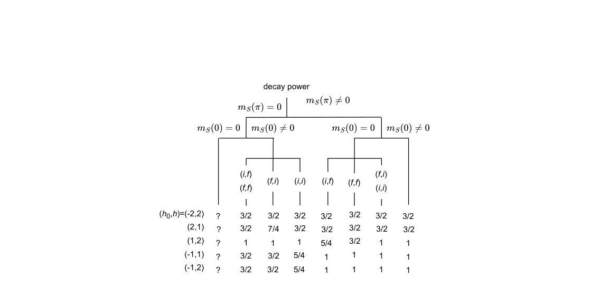
<figcaption class="paper-figure-caption"><b>Fig 3.</b> Figure 4: Flowchart for identifying discrete decay exponents for states with continuous mS(φ), divergent m′ S(φ), and vanishing mA(φ). The label (f/i, f/i) encodes whether m′ S(φ) is finite (f) or divergent (i) at the boundary points φ = 0 and φ = π, respectively. The branch corresponding to mS(0) = mS(π) = 0 is left unspecified.</figcaption>
</figure>
</div>

<p><strong>Summary.</strong> The paper analyzes the late-time relaxation of subsystem correlations following a quantum quench in the 1D transverse-field Ising chain. Using the Bures distance, they demonstrate that this decay follows a discrete power law $t^{-\lambda}$. The exponent $\lambda$ is not arbitrary but is rigidly determined by the specific parameters defining the initial and final states, revealing universal structure in local equilibration dynamics.</p>
<p><strong>Why it may be interesting.</strong> This work provides a deep quantitative understanding of non-equilibrium dynamics in integrable quantum systems, offering universal rules for how local information spreads and thermalizes after a sudden change in Hamiltonian parameters.</p>
<details>
<summary>Detailed structure</summary>
<p><strong>Main problem.</strong> The study investigates how local quantum correlations decay over time following a global quench in an integrable many-body system.</p>
<p><strong>Main result.</strong> The subsystem distance decays universally according to a discrete power law, $B_A(t) \sim t^{-\lambda}$, where the exponent $\lambda$ is restricted to specific rational values determined by the initial and final Hamiltonian parameters.</p>
<p><strong>Method.</strong> The analysis uses numerical simulations of the Bures distance between the time-evolved reduced density matrix and its generalized Gibbs ensemble counterpart.</p>
<p><strong>Model / system.</strong> The system modeled is the infinite one-dimensional transverse-field Ising chain, governed by a Hamiltonian dependent on pre-quench ($h_0$) and post-quench ($h$) transverse fields. The quench involves evolving an initial eigenstate under the new Hamiltonian.</p>
<p><strong>Key observables.</strong> Bures distance $B_A(t)$, which quantifies deviation from equilibrium; decay exponents $\lambda$ and $   ilde{\lambda}$; subsystem size scaling exponent $\alpha$.</p>
<p><strong>Important parameters / regimes.</strong> Pre-quench field ($h_0$), post-quench field ($h$), and the properties of the symmetric excitation-fraction function $m_S(\varphi)$.</p>
<p><strong>Assumptions / limitations.</strong> The analysis relies on numerical studies across various parameter regimes, and while robust, a complete analytical derivation for all exponents is pending.</p>
<p><strong>Figures summary.</strong> Figures illustrate representative $(h_0, h)$ pairs covering distinct physical regimes; flowcharts guide the determination of $\lambda$ based on the continuity and differentiability of $m_S(\varphi)$; numerical plots confirm power-law decay with discrete exponents.</p>
<p><strong>Paper structure.</strong> The paper introduces the model and quench protocol, then classifies representative field pairs $(h_0, h)$ using flowcharts derived from the analytic properties of the excitation function $m_S(\varphi)$, culminating in the presentation of the main results on discrete power-law decay.</p>
</details>
<details>
<summary>Abstract</summary>
<p>We present a numerical study of subsystem distance decay following a global quantum quench in the infinite one-dimensional transverse-field Ising chain, using the mathematically rigorous Bures distance $B_A(t)$ to quantify the deviation of the time-evolved reduced density matrix from its stationary generalized Gibbs ensemble state. We show that the late-time decay follows a discrete power law $B_A(t) \sim t^{-λ}$, with the exponent $λ$ confined to discrete values: $1$, $5/4$, $3/2$, $7/4$, $2$, $5/2$, and potentially further values. The specific exponent is jointly determined by the pre- and post-quench transverse fields, as well as by properties of the symmetric excitation-fraction function $m_S(\varphi)$, defined on $\varphi\in[0,π]$ to characterize the pre-quench Hamiltonian eigenstates, including continuity, boundary values, and first-derivative boundary values, among others. The previously established $t^{-3/2}$ decay for the initial ground state of the pre-quench Hamiltonian is naturally recovered as a special case of this general classification. Our results reveal a universal discrete structure governing local equilibration dynamics in integrable quantum systems.</p>
</details>
<p><sub><a href="#top">↑ back to top</a></sub></p>

<p><a id="paper-2607.25062"></a></p>
<h3 id="a-broadband-individually-addressing-two-and-three-dimensional-photonic-integrated-circuit-for-trapped-ion-qubit-control"><a href="http://arxiv.org/abs/2607.25062v1">A broadband, individually addressing two- and three-dimensional photonic integrated circuit for trapped-ion qubit control</a></h3>
<p><strong>Authors:</strong> Daniel Klawson, Yiyang Zhi, Bingran You, Michael Bareian, Elijah Mossman, Chun-Yuan Fan, Arkadev Roy, Ke Sun, Jason Lee, Sung Cheol Yoon, Qiming Wu, Lai Jiang, Wenjun Ke, Weiwei Wu, Sirui Tang, Zachary Wall, Jiaxiang Wang, Louis Paul Romero, Sam Vizvary, Steven Diaz, Eric R. Hudson, Wesley C. Campbell, Hartmut Haeffner, Ming C. Wu<br>
<strong>Type:</strong> experiment · <strong>Category:</strong> other · <strong>PDF:</strong> <a href="https://arxiv.org/pdf/2607.25062v1">https://arxiv.org/pdf/2607.25062v1</a><br>
<strong>Analysis basis:</strong> full PDF text, analyzed in chunks
<strong>Topic relevance:</strong> 🔥 <code>QC/QI experiment</code> <strong>5/5</strong> · 🔥 <code>analog quantum simulation</code> <strong>4/5</strong> · <code>quantum optics experiment</code> <strong>2/5</strong> · <code>interference shaping light</code> <strong>1/5</strong></p>
<div class="figure-strip-hint">↔ Scroll figures horizontally</div>
<div class="paper-figures-scroll">
<figure class="paper-figure-card">
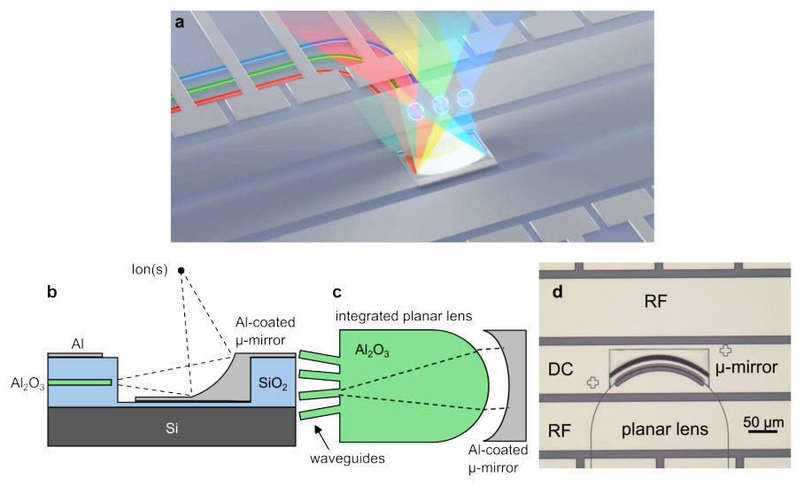
<figcaption class="paper-figure-caption"><b>Fig 1.</b> Figure 1: Architecture of the 2D-3D PIC. a, Isometric rendering of the device. The photonic layer is made up of an amorphous Al2O3 core with a symmetric SiO2 cladding, patterned underneath the 200 nm Al surface-electrode layer. In the ion interaction region, a combination of lithographically defined photonics and 2PP-printed optics is used to route and shape the beam delivered to the ion location. b, Side view of the on-chip imaging system. The beam exits from the on-chip planar lens aperture and is focused by the Al-coated reflector to the ion location. c, Top view of the on-chip imaging system. The planar lens expands and collimates the optical mode from the incoming strip waveguides. The...</figcaption>
</figure>
<figure class="paper-figure-card">
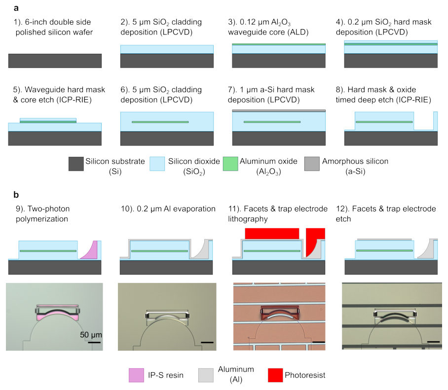
<figcaption class="paper-figure-caption"><b>Fig 2.</b> Figure 2: 6-inch wafer-scale fabrication with integrated two-photon polymerized (2PP) optics. a, Pre-2PP process flow. The aluminum oxide waveguide core is grown via ALD for high optical quality. The silicon dioxide cladding is grown via LPCVD at 450◦C. The optical facets are defined through ICP-RIE, with amorphous silicon serving as the hard mask for the vertical sidewalls. b, Post-2PP process flow. We perform novel post-processing directly on the printed structures. It involves evaporation of aluminum for the surface electrodes and reflector, followed by contact lithography and aluminum etching to define the electrode gaps and optical facets. All scale bars on the microscope images are 50...</figcaption>
</figure>
<figure class="paper-figure-card">
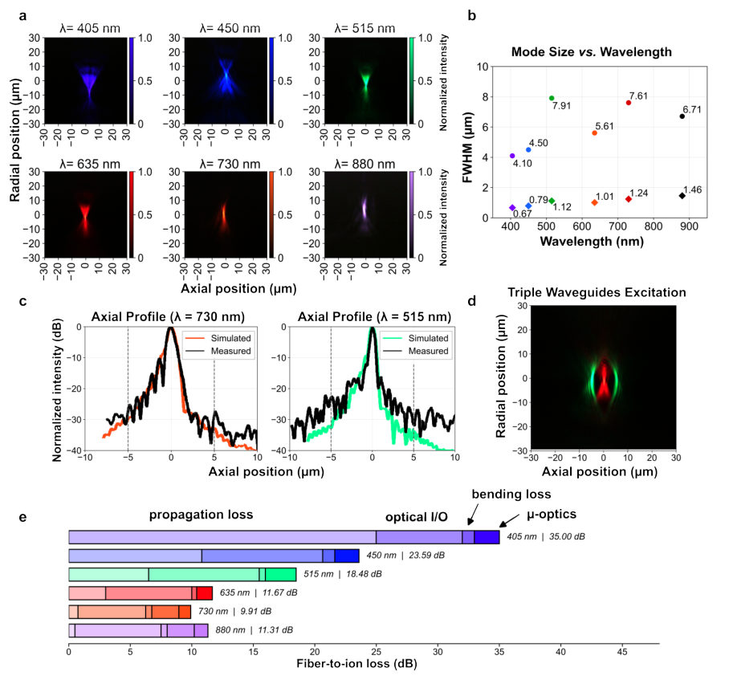
<figcaption class="paper-figure-caption"><b>Fig 3.</b> Figure 3: Broadband, micron-level focusing. a, Measured top-down focal-plane images at h = 75 µm for six wavelengths from 405 to 880 nm through the nanophotonic device. The shown color map for each wavelength is the perceived color at each wavelength except λ = 880 nm, which is a pseudo-color. b, Axial (diamonds) and radial (circles) FWHM versus wavelength. The effective NA is different in the axial and radial directions, and so is the achieved spot size. c, Simulated (532 nm and 729 nm) and measured (515 nm and 730 nm) focal-plane intensity for on-axis and 5 µm-offset focal spots. The average intensity crosstalk is -27.6 dB. d, Measured simultaneous three-spot illumination at 515 nm and...</figcaption>
</figure>
<figure class="paper-figure-card">
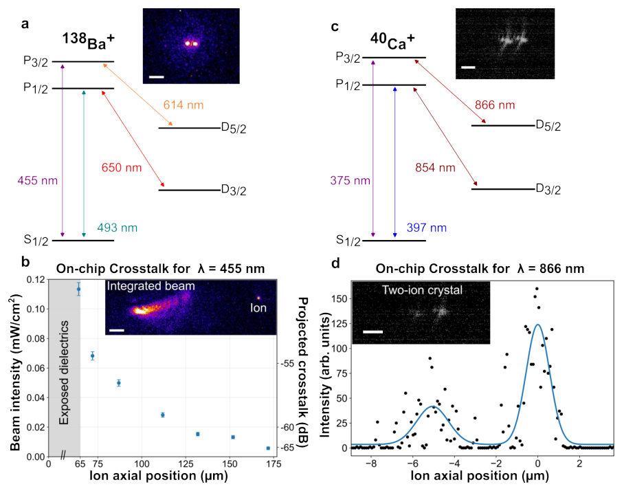
<figcaption class="paper-figure-caption"><b>Fig 4.</b> Figure 4: Ion trapping and crosstalk results. a, Relevant energy levels and optical transitions of 138Ba+. The inset shows the fluorescence image of two trapped 138Ba+ ions with free space 493 nm and 650 nm light shining onto the ions. b, Relevant energy levels and optical transitions of 40Ca+. The inset shows the fluorescence image of two trapped 40Ca+ ions directly on top of the mirror using all free-space beams. c, Measured 455 nm optical crosstalk intensity as a function of ion position near the dielectric cutout. Blue points show the intensity inferred from the measured excitation rate of the S1/2 →P3/2 transition of Ba+, revealing that the intensity decreases with increasing distance...</figcaption>
</figure>
<figure class="paper-figure-card">
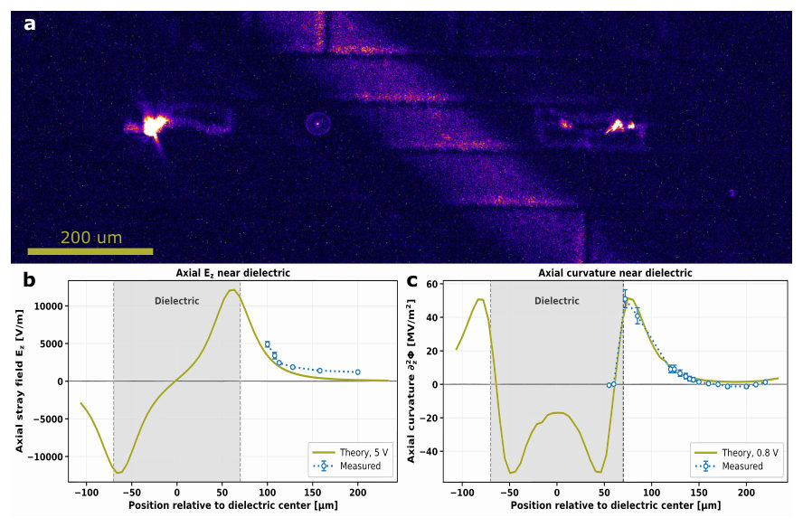
<figcaption class="paper-figure-caption"><b>Fig 5.</b> Figure 5: Axial electrostatic perturbation from a charged dielectric. a, Fluorescence image near the dielectric region. b, Measured axial stray field, Ez, compared with a BEM simulation. c, Axial potential curvature, ∂2 zΦ, extracted from secular-frequency measurements using ∂2 zΦ = m(2πfz)2/q. Blue points are experimental data with linewidth-derived uncertainties; gold curves are simulations modeling the charged dielectric surfaces as equal-voltage electrodes. The shaded region marks the dielectric.</figcaption>
</figure>
</div>

<p><strong>Summary.</strong> The research presents a novel, monolithic photonic integrated circuit designed to overcome bandwidth limitations in trapped-ion quantum computing. By combining planar waveguides with 3D-printed micromirrors, the device achieves broadband, individually addressable light delivery across multiple wavelengths. This breakthrough significantly enhances the scalability and complexity of future trapped-ion quantum processors.</p>
<p><strong>Why it may be interesting.</strong> This work directly addresses the engineering challenge of scaling quantum processors. The integration of additive manufacturing (2PP) into established photonic platforms is a major advancement for realizing complex, scalable quantum hardware architectures.</p>
<details>
<summary>Detailed structure</summary>
<p><strong>Main problem.</strong> Delivering multiple, distinct wavelengths across large networks of interaction zones for trapped-ion qubit control is a major bottleneck due to scalability issues with conventional free-space or narrow-bandwidth on-chip optics.</p>
<p><strong>Main result.</strong> The authors demonstrated a monolithic photonic integrated circuit that successfully achieves broadband addressing (405–880 nm) and individual ion addressing while maintaining low optical crosstalk. This integrates 3D micro-optics fabricated via two-photon polymerization with surface electrode traps on silicon wafers.</p>
<p><strong>Method.</strong> The system combines lithographically defined waveguides with custom micromirrors created using two-photon polymerization (2PP) to focus light onto trapped ions ($  ext{Ca}^+$ and $    ext{Ba}^+$). Characterization involves measuring beam profiles, crosstalk, and ion repumping across the specified wavelength range.</p>
<p><strong>Model / system.</strong> The platform uses trapped ions ($   ext{Ca}^+$, $   ext{Ba}^+$) controlled by a hybrid photonic integrated circuit. This PIC integrates planar waveguides with 3D-printed micromirrors to deliver light efficiently and broadly across multiple wavelengths onto the ion trap region.</p>
<p><strong>Key observables.</strong> Broadband addressing capability (405–880 nm); low optical crosstalk ($\le -27 	ext{ dB}$ at $5 \mu	ext{m}$ pitch); tight, broadband focusing profiles; successful single-ion repumping demonstration.</p>
<p><strong>Important parameters / regimes.</strong> Wavelength range: 405 nm to 880 nm; Crosstalk: $-27 	ext{ dB}$; Pitch: $5 \mu	ext{m}$.</p>
<p><strong>Assumptions / limitations.</strong> The relative crosstalk profile measured at one wavelength (e.g., 455 nm) can be assumed to scale linearly for estimating coherence times at other wavelengths (e.g., 493 nm).</p>
<p><strong>Figures summary.</strong> Figures illustrate the device architecture, showing planar lenses and $\mu$-mirrors; beam profiles confirm tight focusing across the broadband range; crosstalk measurements quantify low signal leakage between addressed ions.</p>
<p><strong>Paper structure.</strong> The paper details the fabrication process flow (combining LPCVD/ALD with 2PP), presents optical characterization results demonstrating broadband focusing and low crosstalk, validates ion trapping for $  ext{Ca}^+$ and $    ext{Ba}^+$, and concludes by showing individual addressing capability.</p>
</details>
<details>
<summary>Abstract</summary>
<p>Trapped ions provide a high-fidelity platform for quantum information processing, yet delivery of multiple, distinct wavelengths across large networks of interaction zones remains a bottleneck. Conventional free-space light delivery lacks scalability, while on-chip grating couplers suffer from narrow operational bandwidth that increases circuit footprint and optical interfacing complexity. Here we show a broadband photonic integrated circuit capable of addressing individual ions. The circuit combines a planar waveguide lens with a micromirror fabricated using two-photon polymerization at wafer scale. This implementation can address three individual ions from $λ$ = 405 - 880 nm with -27 dB average intensity crosstalk at $5\,μ\mathrm{m}$ pitch. We trap $^{40}\mathrm{Ca}^{+}$ and $^{138}\mathrm{Ba}^{+}$ ions above such devices, characterize optical crosstalk with barium ions, and demonstrate individual repumping of calcium ions. This monolithic photonic architecture brings broadband addressing in an on-chip modality to trapped-ion technology. More generally, integrating additive manufacturing into quantum devices is poised to unlock expanded design space for implementing novel quantum architectures.</p>
</details>
<p><sub><a href="#top">↑ back to top</a></sub></p>

<p><a id="paper-2607.25267"></a></p>
<h3 id="tuning-density-and-spin-ordering-of-degenerate-fermi-gases-in-an-optical-cavity"><a href="http://arxiv.org/abs/2607.25267v1">Tuning Density and Spin Ordering of Degenerate Fermi Gases in an Optical Cavity</a></h3>
<p><strong>Authors:</strong> Wei Qin, Yuan-Hong Chen, Renyuan Liao<br>
<strong>Type:</strong> theory · <strong>Category:</strong> other · <strong>PDF:</strong> <a href="https://arxiv.org/pdf/2607.25267v1">https://arxiv.org/pdf/2607.25267v1</a><br>
<strong>Analysis basis:</strong> full PDF text, analyzed in chunks
<strong>Topic relevance:</strong> 🔥 <code>Dicke superradiance</code> <strong>4/5</strong> · 🔥 <code>analog quantum simulation</code> <strong>4/5</strong> · 🔥 <code>correlated cavity matter</code> <strong>4/5</strong> · 🔥 <code>driven-dissipative phase transition</code> <strong>4/5</strong> · <code>Tavis-Cummings &amp; cavity-many-emitter</code> <strong>3/5</strong> · <code>correlated / nonlocal dissipation</code> <strong>3/5</strong> · <code>exotic spin models in light-matter</code> <strong>3/5</strong> · <code>methods for driven-dissipative</code> <strong>3/5</strong> · <code>non-equilibrium dynamics</code> <strong>2/5</strong> · <code>non-equilibrium universality</code> <strong>2/5</strong> · <code>superradiant laser</code> <strong>2/5</strong> · <code>Keldysh / 2PI / non-Gaussian methods</code> <strong>1/5</strong> · <code>entanglement &amp; information structure</code> <strong>1/5</strong> · <code>spintronics-quantum-optics interface</code> <strong>1/5</strong></p>
<div class="figure-strip-hint">↔ Scroll figures horizontally</div>
<div class="paper-figures-scroll">
<figure class="paper-figure-card">
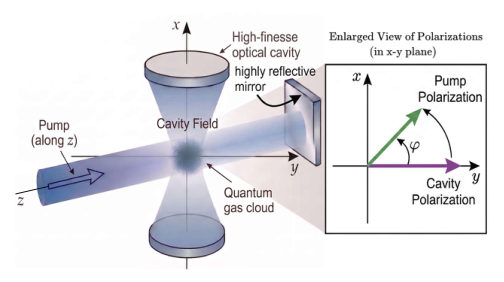
<figcaption class="paper-figure-caption"><b>Fig 1.</b> FIG. 1. Schematic of the experimental setup. The degenerate Fermi gas is positioned at the center of the cavity axis. The high-finesse optical cavity is oriented along ˆx, and the pump laser is directed along ˆz. The cavity polarization (purple ar- row) is taken to be along ˆy, and the pump polarization (green arrow) makes an angle φ with respect to this direction.</figcaption>
</figure>
<figure class="paper-figure-card">
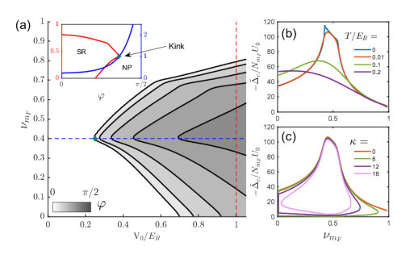
<figcaption class="paper-figure-caption"><b>Fig 2.</b> FIG. 3. (a) Critical relative polarization angle φcrit as a function of pump lattice depth V0/ER and filling fraction νmF . Darker shading corresponds to φcrit approaching π/2; white regions indicate that the superradiant threshold is not reached. Inset: phase diagrams of φ and (red) νmF at fixed V0 = 1ER and (blue) V0/ER at fixed νmF = 0.40. The paths are marked by the dashed lines of the same colors in (a). NP and SR denote the normal and superradiant phases, re- spectively. (b) Evolution with temperature T. (c) Impact of cavity losses κ at T = 0.01ER.</figcaption>
</figure>
<figure class="paper-figure-card">
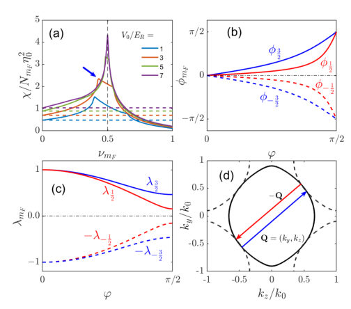
<figcaption class="paper-figure-caption"><b>Fig 3.</b> FIG. 2. (a) Dependence of the rescaled susceptibility χmF /NmF η2 0 on the filling fraction νmF for several pump depths V0/ER. Solid and dashed curves correspond to the noninteracting Fermi and Bose cases, respectively. The in- flection points observed in the solid lines are signatures of FS nesting. The blue arrow, located at V0 = 3ER and νmF ≈0.43, denotes the example presented in (d). (b) and (c) Parameters ϕmF and λmF plotted as functions of the relative polarization angle φ. (d) Nesting of the FS for the Hamilto- nian ˆH0 before the superradiant transition occurs. Black solid line indicates the original FS, while light blue dashed curves show the FS is shifted by Q = ±kp ± kc. Colored...</figcaption>
</figure>
<figure class="paper-figure-card">
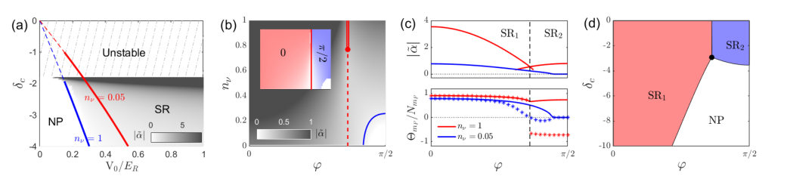
<figcaption class="paper-figure-caption"><b>Fig 4.</b> FIG. 4. Equilibrium phase diagrams are presented for (a) nν = 1 at φ = 0 and (b) the φ-nν plane with V0/ER = 1 and ˜δc/ER = −2.7. (a) The blue and red curves show second-order boundaries separating the normal (NP) and superradiant (SR) phases for nν = 1 and nν = 0.05, respectively. (b) The blue line is the NP-SR boundary. The vertical red line indicates the component-separation boundary [51] at φcrit = arctan(2αs/αv). The separation is second order (dashed) for nν &lt; 0.73 and first order (double solid) for nν &gt; 0.77. The inset shows the photon phase near 0 (π/2) for φ &lt; φcrit (φ &gt; φcrit). (c) Instances of (b) at nν = 1 and nν = 0.05. The local minimum of the average photon number |˜α| (top...</figcaption>
</figure>
</div>

<p><strong>Summary.</strong> This theoretical study explores superradiant phase transitions in Fermi gases coupled to optical cavities, demonstrating that the transition point is controlled by a competition between scalar and vectorial light-matter couplings. By tuning the relative polarization angle of the driving fields, researchers can manipulate this coupling balance, leading to insights applicable to both fermionic and bosonic quantum systems.</p>
<p><strong>Why it may be interesting.</strong> This work bridges concepts from cavity QED (superradiance) with strongly interacting quantum matter (Fermi gases), providing tunable control over collective quantum phenomena using light polarization—a highly relevant area for experimental AMO physics.</p>
<details>
<summary>Detailed structure</summary>
<p><strong>Main problem.</strong> The study investigates the superradiant quantum phase transition (QPT) occurring in a spin-degenerate Fermi gas coupled to an optical cavity.</p>
<p><strong>Main result.</strong> The phase transition threshold is found to be synergistically determined by both the scalar-vectorial coupling weight and Pauli blocking effects. Furthermore, the relative polarization angle can tune the competition between these couplings.</p>
<p><strong>Method.</strong> The analysis employs mean-field theory applied to the effective Hamiltonian derived after eliminating excited states, utilizing steady-state solutions of the Lindblad master equation and free energy minimization techniques.</p>
<p><strong>Model / system.</strong> The system is a spin-degenerate Fermi gas confined in a high-finesse optical cavity, where interactions are mediated by light fields whose coupling strength depends on the relative polarization angle ($\phi$) between the pump and cavity fields. The model incorporates both scalar and vectorial atom-light couplings.</p>
<p><strong>Key observables.</strong> Superradiance transition threshold, critical polarization angle ($\varphi_{	ext{crit}}$), population ratio ($n_
u$), and susceptibility ($\chi_{mF}$).</p>
<p><strong>Important parameters / regimes.</strong> Relative polarization angle ($\phi$), cavity detuning ($\Delta_c$), pump lattice depth ($V_0$), and particle number imbalance ratio ($n_
u$).</p>
<p><strong>Assumptions / limitations.</strong> The analysis relies on a mean-field approximation for photon dynamics, and the free energy calculation is used to identify continuous transition points.</p>
<p><strong>Figures summary.</strong> Figures illustrate the setup geometry (Fig. 1), show density dependence of susceptibility ($\chi_{mF}$) vs filling factor (Fig. 2(a)), map out phase diagrams showing Normal vs Superradiant phases based on polarization angle and lattice depth (Fig. 3(a)), and depict phase boundaries related to particle imbalance (Fig. 4).</p>
<p><strong>Paper structure.</strong> The paper progresses by first establishing the effective Hamiltonian, deriving mean-field equations for photon dynamics, analyzing the conditions for superradiance via free energy minimization, and finally mapping out complex phase diagrams showing how polarization angle and density control the transition order and type.</p>
</details>
<details>
<summary>Abstract</summary>
<p>We investigate a spin-degenerate Fermi gas coupled to a high-finesse optical cavity, where the competition between scalar and vectorial couplings is controlled by the relative polarization angle of the pump and cavity fields. We find that the phase transition threshold is synergistically determined by the scalar-vectorial coupling weight and Pauli blocking, with the latter dictating the critical pump lattice depth required for the onset of superradiance. For a two-component Fermi gas with opposite spins, the population ratio drives two distinct types of phase transitions corresponding to real-space phase separation: continuous and discontinuous. Nevertheless, the boundary of the phase transition remains fundamentally governed by the scalar-vectorial coupling competition. We clarify the impact of the relative polarization angle on phase transitions of the system; these results also apply to bosonic systems. Our results provide valuable theoretical insights for future experimental realizations.</p>
</details>
<p><sub><a href="#top">↑ back to top</a></sub></p>

<p><a id="paper-2607.25547"></a></p>
<h3 id="collective-states-of-multi-level-emitters-the-role-of-multi-level-interferences"><a href="http://arxiv.org/abs/2607.25547v1">Collective states of multi-level emitters: The role of multi-level interferences</a></h3>
<p><strong>Authors:</strong> Nathan E. Rahat, Christiane P. Koch<br>
<strong>Type:</strong> theory · <strong>Category:</strong> other · <strong>PDF:</strong> <a href="https://arxiv.org/pdf/2607.25547v1">https://arxiv.org/pdf/2607.25547v1</a><br>
<strong>Analysis basis:</strong> full PDF text, analyzed in chunks
<strong>Topic relevance:</strong> 🔥 <code>Dicke superradiance</code> <strong>4/5</strong> · 🔥 <code>correlated / nonlocal dissipation</code> <strong>4/5</strong> · <code>analog quantum simulation</code> <strong>3/5</strong> · <code>free-space correlated emission</code> <strong>3/5</strong> · <code>interference shaping light</code> <strong>3/5</strong> · <code>superradiant laser</code> <strong>3/5</strong> · <code>Tavis-Cummings &amp; cavity-many-emitter</code> <strong>2/5</strong> · <code>correlated cavity matter</code> <strong>2/5</strong> · <code>driven-dissipative phase transition</code> <strong>2/5</strong> · <code>methods for driven-dissipative</code> <strong>2/5</strong> · <code>non-equilibrium dynamics</code> <strong>2/5</strong> · <code>Keldysh / 2PI / non-Gaussian methods</code> <strong>1/5</strong> · <code>entanglement &amp; information structure</code> <strong>1/5</strong> · <code>exotic spin models in light-matter</code> <strong>1/5</strong> · <code>non-equilibrium universality</code> <strong>1/5</strong></p>
<div class="figure-strip-hint">↔ Scroll figures horizontally</div>
<div class="paper-figures-scroll">
<figure class="paper-figure-card">
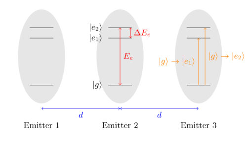
<figcaption class="paper-figure-caption"><b>Fig 1.</b> FIG. 1. Sketch of a system consisting of three identical emit- ters arranged in a line with spatial separation d between them, interacting with the quantized EM field. Each emitter con- sists of three levels in a V configuration - the internal level structure is specified in emitter 2, and the two allowed tran- sitions are indicated in emitter 3.</figcaption>
</figure>
<figure class="paper-figure-card">
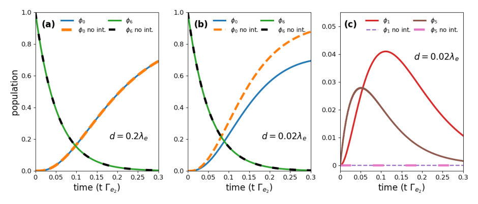
<figcaption class="paper-figure-caption"><b>Fig 2.</b> FIG. 2. Population dynamics comparing time evolution with (solid lines) and without (dashed lines) interferences between different transitions, the latter obtained by setting all terms with k ̸= m to zero in Eq. (6) for two different emitter separations d. The system is initialized in |ϕ6⟩, and the time units are in terms of the free emitter decay rate from |e2⟩to |g⟩.</figcaption>
</figure>
<figure class="paper-figure-card">
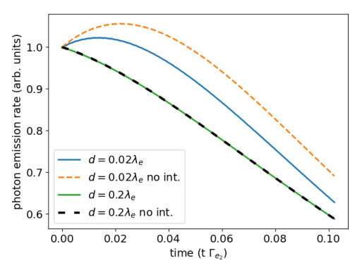
<figcaption class="paper-figure-caption"><b>Fig 3.</b> FIG. 3. Photon emission rate from the fully excited emitter array. For d = 0.02λe, with multi-level interferences (solid blue line) and without (dashed orange line), and d = 0.2λe , with (solid green) and without (dashed brown) interferences.</figcaption>
</figure>
<figure class="paper-figure-card">
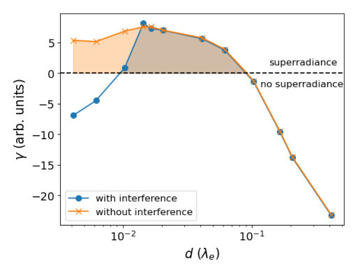
<figcaption class="paper-figure-caption"><b>Fig 4.</b> FIG. 4. The initial photon emission rate from the array as a function of the spatial distance between emitters, with (blue dots) and without (orange crosses) interferences. The dashed black line at 0 represents the criteria for superradiance.</figcaption>
</figure>
<figure class="paper-figure-card">
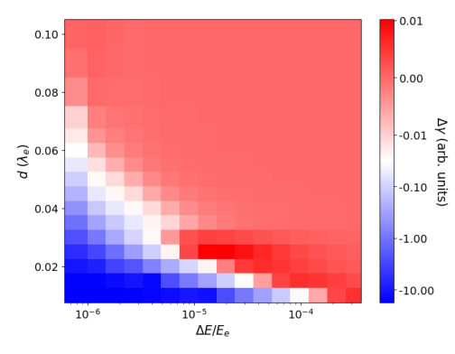
<figcaption class="paper-figure-caption"><b>Fig 5.</b> FIG. 5. Difference of initial photon emission rate between interfering and non-interfering emitter arrays as a function of the excited state energy separation and the spatial separation within the array.</figcaption>
</figure>
</div>

<p><strong>Summary.</strong> This paper theoretically explores collective light-matter interactions in arrays of multi-level quantum emitters. By including full multi-level interference effects into the master equation, the authors demonstrate that these interferences fundamentally alter decay dynamics compared to simpler models. The findings suggest new physical criteria for phenomena like superradiance and propose molecular systems for experimental realization.</p>
<p><strong>Why it may be interesting.</strong> This work is highly relevant to AMO physics as it pushes beyond standard two-level approximations to model complex quantum emitters (like molecules) in arrays, which is crucial for next-generation quantum light sources and quantum simulation platforms.</p>
<details>
<summary>Detailed structure</summary>
<p><strong>Main problem.</strong> The study investigates how accounting for the multi-level nature of quantum emitters fundamentally alters the collective light-matter interactions compared to simplified two-level approximations.</p>
<p><strong>Main result.</strong> Multi-level interference significantly changes collective state character, leading to a lower bound on emitter separation required for superradiance that is absent in the two-level case.</p>
<p><strong>Method.</strong> The dynamics are modeled using a full Master Equation derived under the Born-Markov approximation, allowing for direct inclusion of multi-level interference terms.</p>
<p><strong>Model / system.</strong> The system consists of an array of N multi-level quantum emitters (e.g., V-systems) interacting with the electromagnetic vacuum field. The theoretical framework uses a full Hamiltonian and Master Equation approach to track population dynamics.</p>
<p><strong>Key observables.</strong> Total photon emission rate, initial photon emission rate ($\gamma$), and the difference in initial rates ($\Delta\gamma$) between interfering and non-interfering models.</p>
<p><strong>Important parameters / regimes.</strong> Emitter separation ($d$), energy separation between excited states ($\Delta E_e$), and the ratio of $d$ to the excitation wavelength ($\lambda_e$).</p>
<p><strong>Assumptions / limitations.</strong> The derivation relies on the Born-Markov approximation, and approximations are made for near-resonant transitions (e.g., replacing frequencies with averages).</p>
<p><strong>Figures summary.</strong> Figures compare population dynamics and initial photon emission rates between models that include multi-level interference versus those that neglect it, showing deviations at small separations.</p>
<p><strong>Paper structure.</strong> The paper develops the Master Equation incorporating full dipole interactions, analyzes the resulting equations of motion for the density matrix, and then numerically compares predictions for superradiance and population decay across various emitter separation regimes.</p>
</details>
<details>
<summary>Abstract</summary>
<p>We explore how collective states of light and matter differ when the multi-level nature of the quantum emitters is fully taken into account. For closely spaced emitters, interferences between near-resonant transitions completely change the character of the collective states compared to two-level approximations. In particular, we find a lower bound on the emitter separation for superradiance to occur which does not exist for two-level emitters. By contrast, for larger separations between the emitters, the collective states resemble those obtained within the widely used two-level approximation of the emitters. Both regimes may be realized by molecules trapped in optical lattices. We therefore propose molecular candidates and describe experimental signatures of emerging multi-level interference.</p>
</details>
<p><sub><a href="#top">↑ back to top</a></sub></p>

<p><a id="paper-2607.25341"></a></p>
<h3 id="remote-entanglement-of-massive-oscillators-via-wire-mediated-coulomb-interaction"><a href="http://arxiv.org/abs/2607.25341v1">Remote entanglement of massive oscillators via wire-mediated Coulomb interaction</a></h3>
<p><strong>Authors:</strong> Lorenzo Papa, Onur Hosten, Carlos Gonzalez-Ballestero<br>
<strong>Type:</strong> theory · <strong>Category:</strong> other · <strong>PDF:</strong> <a href="https://arxiv.org/pdf/2607.25341v1">https://arxiv.org/pdf/2607.25341v1</a><br>
<strong>Analysis basis:</strong> full PDF text, analyzed in chunks
<strong>Topic relevance:</strong> 🔥 <code>quantum measurements</code> <strong>4/5</strong> · <code>correlated / nonlocal dissipation</code> <strong>3/5</strong> · <code>entanglement &amp; information structure</code> <strong>3/5</strong> · <code>measurement-induced transitions</code> <strong>3/5</strong> · <code>methods for driven-dissipative</code> <strong>3/5</strong> · <code>Keldysh / 2PI / non-Gaussian methods</code> <strong>2/5</strong> · <code>analog quantum simulation</code> <strong>2/5</strong> · <code>driven-dissipative phase transition</code> <strong>2/5</strong> · <code>non-equilibrium dynamics</code> <strong>2/5</strong> · <code>Tavis-Cummings &amp; cavity-many-emitter</code> <strong>1/5</strong> · <code>correlated cavity matter</code> <strong>1/5</strong> · <code>non-equilibrium universality</code> <strong>1/5</strong></p>
<div class="figure-strip-hint">↔ Scroll figures horizontally</div>
<div class="paper-figures-scroll">
<figure class="paper-figure-card">
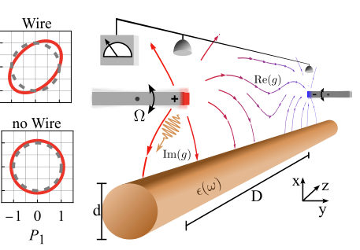
<figcaption class="paper-figure-caption"><b>Fig 1.</b> FIG. 1. A conducting wire with permittivity ϵ(ω) can be used to increase the motional electrostatic coupling between two oscillators, illustrated here as torsional pendula. The image charge distributions generate coherent coupling and dissipa- tion, proportional to real and imaginary parts of the Green’s function g respectively. For low-frequency oscillator the latter becomes negligible. Continuous monitoring of the oscillators’ positions purifies their steady state, enabling the formation of motional entanglement. Insets: schematic phase-space mo- tional distributions indicating the resulting two-mode squeez- ing of momentum quadratures P1/2.</figcaption>
</figure>
<figure class="paper-figure-card">
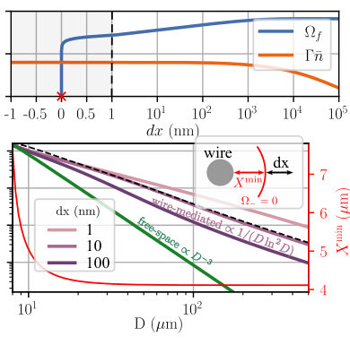
<figcaption class="paper-figure-caption"><b>Fig 2.</b> FIG. 2. Characterization of the master equation rates for the parameters in Tab. I. (a) Renormalized mechanical frequency Ωf and wire-induced decoherence rate Γ¯n vs distance to in- stability dx (see diagram and text for details), (b) Motional particle-particle coupling Gtot without the wire (free space, green) and in the presence of the wire (purple) as a function of inter-particle distance D. For dx = 10nm, the black dashed line shows the coupling obtained using the analytical asymp- totic approximation Eq. (20). The red solid line shows the minimum equilibrium distance Xmin as a function of D. .</figcaption>
</figure>
<figure class="paper-figure-card">
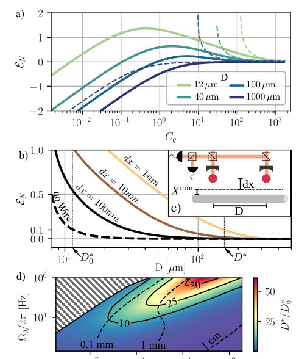
<figcaption class="paper-figure-caption"><b>Fig 3.</b> FIG. 3. Steady-state entanglement between the two particles under continuous position measurement. (a) Log-negativity EN versus quantum cooperativity for different interparticle distances D; dashed lines show the high-cooperativiy analyt- ical approximation Eq. (32). (b) EN versus D at optimal quantum cooperativity and for different radial distances to instability dx. (c) Sketch of the proposed setup: the particles act as mirrors of optical cavities and are continuously mea- sured via the cavity output light. (d) Maximum inter-particle distance for which entanglement can be observed, D∗, normal- ized by the value in the absence of the wire, D∗ 0, as a func- tion of q2/m and bare mechanical...</figcaption>
</figure>
<figure class="paper-figure-card">
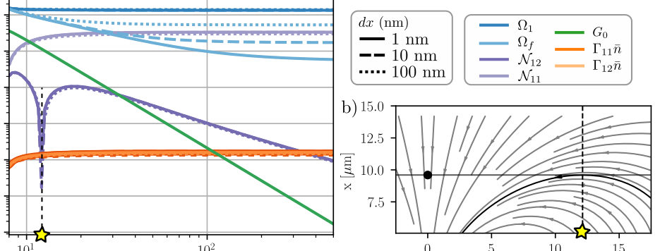
<figcaption class="paper-figure-caption"><b>Fig 4.</b> FIG. 4. (a) All the rates of the master equation as a function of interparticle separation D and distance to instability dx. (b) the wire-mediated coupling N12 is given by the x-components of the field along the horizontal line, which explains the zero-crossing in (a) (see text for details)</figcaption>
</figure>
</div>

<p><strong>Summary.</strong> The paper demonstrates how placing charged macroscopic oscillators near a conducting wire fundamentally alters their Coulomb interaction, enhancing the coupling strength at large separations. By combining this enhanced interaction with continuous position measurements, the authors show that steady-state motional entanglement can be generated over distances far exceeding free-space limits. This establishes conductor-assisted interactions as a novel resource for quantum control.</p>
<p><strong>Why it may be interesting.</strong> This work directly addresses quantum control of massive objects by engineering long-range interactions, which is highly relevant for cavity QED and open quantum systems research involving mechanical resonators.</p>
<details>
<summary>Detailed structure</summary>
<p><strong>Main problem.</strong> The authors propose a method to enhance the Coulomb interaction between massive mechanical oscillators by placing them near a conducting structure, aiming to generate steady-state motional entanglement over long distances.</p>
<p><strong>Main result.</strong> They predict that the wire modifies the coupling scaling from $1/D^3$ to $1/(D\ln^2 D)$, enabling observable entanglement at separations much larger than achievable in free space.</p>
<p><strong>Method.</strong> The analysis uses macroscopic quantum electrodynamics, deriving effective dynamics via a master equation approach and employing continuous measurement theory (Kalman filtering analogy).</p>
<p><strong>Model / system.</strong> The system consists of two charged macroscopic mechanical oscillators coupled by both free-space Coulomb interaction and an image charge interaction mediated by a nearby conducting wire. The dynamics are described by a Hamiltonian and subsequently analyzed using a master equation.</p>
<p><strong>Key observables.</strong> Steady-state motional entanglement, renormalized mechanical frequency ($\Omega'_f$), and the modified coupling rate ($G_{	ext{tot}}$).</p>
<p><strong>Important parameters / regimes.</strong> Separation $D$, oscillator mass $m$, wire geometry (cylindrical), and operating regime (low-frequency limit $\hbar\Omega \ll k_B T$).</p>
<p><strong>Assumptions / limitations.</strong> The analysis assumes the electroquasistatic limit, linearizes position dependence around equilibrium points, and utilizes approximations like Born-Markov for bath tracing.</p>
<p><strong>Figures summary.</strong> Figures illustrate the setup showing image charge generation; one figure compares coupling rates vs. distance $D$ (free space vs. wire); another shows rate dependencies on separation and proximity to instability.</p>
<p><strong>Paper structure.</strong> The paper develops from deriving the effective Hamiltonian incorporating medium effects, leading to a master equation description of dynamics, simplifying this master equation using approximations like RWA, and finally analyzing state evolution under continuous measurement via Kalman filtering analogies.</p>
</details>
<details>
<summary>Abstract</summary>
<p>We propose a method to enhance Coulomb interaction between charged macroscopic mechanical oscillators by placing a conducting structure in their vicinity. We derive the effective motional dynamics of the two oscillators using macroscopic quantum electrodynamics and show that image charges induced in the conductor fundamentally modify the range of the electrostatic interaction. For the specific case of a cylindrical wire, we predict that the coherent motional coupling changes from the free-space scaling $1/D^3$ to an asymptotic $1/(D\ln^2 D)$ dependence on the separation $D$ between the oscillators, at the cost of only negligible additional decoherence for low-frequency oscillators. We further show that, when combined with continuous position measurements, the enhanced interaction enables the generation of steady-state motional entanglement between the oscillators over significantly larger distances than achievable in free space. For experimentally realistic milligram-scale oscillators, we predict observable entanglement at separations of several hundred microns -- more than an order of magnitude beyond free-space capabilities -- with improvements approaching two orders of magnitude in future systems. These results identify conductor-assisted Coulomb interactions as a resource for quantum control of massive objects and for the exploration of entanglement generated by fundamental central forces.</p>
</details>
<p><sub><a href="#top">↑ back to top</a></sub></p>

<p><a id="paper-2607.25969"></a></p>
<h3 id="solvable-quantum-circuits-with-non-markovian-influence-matrices"><a href="http://arxiv.org/abs/2607.25969v1">Solvable Quantum Circuits with non-Markovian Influence Matrices</a></h3>
<p><strong>Authors:</strong> Samuel H. Pickering, Max McGinley, Bhavik Kumar, Bruno Bertini<br>
<strong>Type:</strong> theory · <strong>Category:</strong> statistical mechanics · <strong>PDF:</strong> <a href="https://arxiv.org/pdf/2607.25969v1">https://arxiv.org/pdf/2607.25969v1</a><br>
<strong>Analysis basis:</strong> full PDF text, analyzed in chunks
<strong>Topic relevance:</strong> 🔥 <code>analog quantum simulation</code> <strong>4/5</strong> · 🔥 <code>methods for driven-dissipative</code> <strong>4/5</strong> · <code>correlated / nonlocal dissipation</code> <strong>3/5</strong> · <code>driven-dissipative phase transition</code> <strong>3/5</strong> · <code>entanglement &amp; information structure</code> <strong>3/5</strong> · <code>non-equilibrium dynamics</code> <strong>3/5</strong> · <code>Keldysh / 2PI / non-Gaussian methods</code> <strong>2/5</strong> · <code>non-equilibrium universality</code> <strong>2/5</strong> · <code>Kondo &amp; dissipative impurity</code> <strong>1/5</strong> · <code>measurement-induced transitions</code> <strong>1/5</strong> · <code>scars &amp; prethermalization</code> <strong>1/5</strong></p>
<div class="figure-strip-hint">↔ Scroll figures horizontally</div>
<div class="paper-figures-scroll">
<figure class="paper-figure-card">
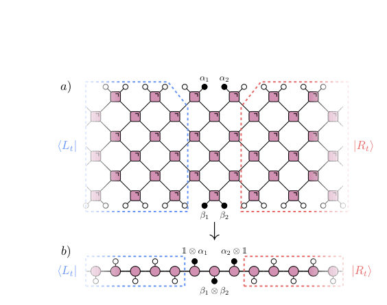
<figcaption class="paper-figure-caption"><b>Fig 1.</b> FIG. 1. Tensor network describing dynamical correlations on top of the infinite temperature state Eq.(1) for x = 0. By representing columns of gates as their own tensors we can compress the notation to convert panel (a) to (b).</figcaption>
</figure>
<figure class="paper-figure-card">
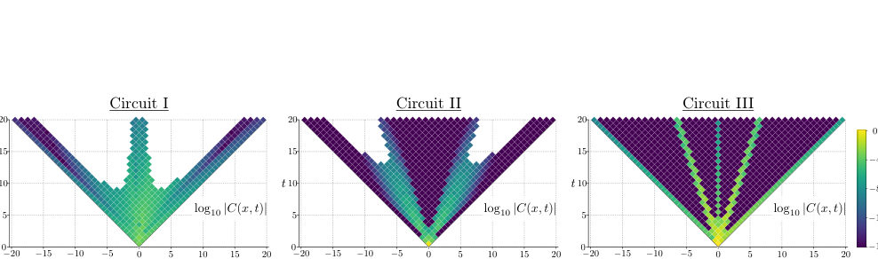
<figcaption class="paper-figure-caption"><b>Fig 2.</b> FIG. 2. Dynamical correlation functions C(x, t) (between random Hermitian operators acting on two sites) for three example circuits satisfying CDU2/CDU3, displaying varying levels of solvability. The details of each circuit are described in Table II. Numerics are performed using MPS-based simulation of the tilted influence matrix with no truncation error (see End Matter); blank entries indicate that the bond dimension surpassed the cutoff χc = 384. The circuits I-III are described in Appendix D with the general summary being that I and III are CDU2 whilst II is CDU3. The ordering of the circuits corresponds to the degree of solvability beyond that guaranteed by the CDUn conditions (see End...</figcaption>
</figure>
<figure class="paper-figure-card">
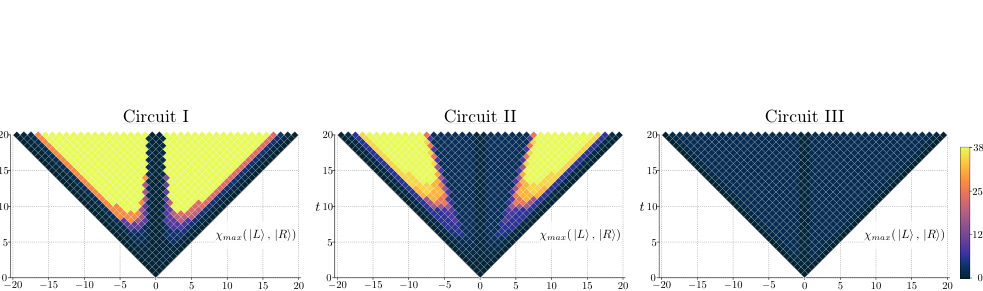
<figcaption class="paper-figure-caption"><b>Fig 3.</b> FIG. 3. Maximum bond dimensions of both the (tilted) left and right influence matrices χmax( |Lt⟩, |Rt⟩) encountered when computing each correlation function in Fig. 2. Regions that surpass the cutoff χc = 384 in the figure correspond to blank regions in Fig. 2.</figcaption>
</figure>
<figure class="paper-figure-card">
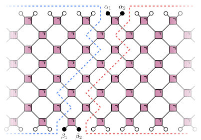
<figcaption class="paper-figure-caption"><b>Fig 4.</b> FIG. 4. Tilted influence matrices characterising correlation functions with non-zero separation.</figcaption>
</figure>
<figure class="paper-figure-card">
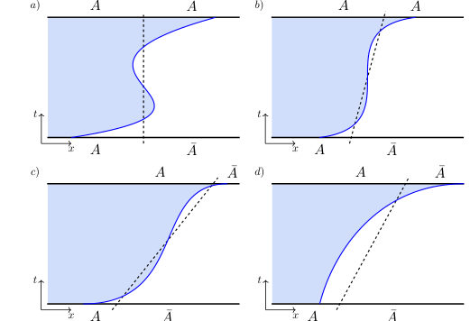
<figcaption class="paper-figure-caption"><b>Fig 5.</b> FIG. 5. Examples of different operator trajectories and how they intersect with bipartitions at different tilt angles.</figcaption>
</figure>
</div>

<p><strong>Summary.</strong> The paper introduces a systematic method to design solvable quantum circuits whose evolution captures non-Markovian correlations typical of interacting many-body systems. By deforming free-fermionic Clifford gates, the authors generate influence matrices that are computationally tractable while exhibiting complex temporal dependencies. This advances the field by bridging the gap between simple solvable models and realistic, strongly correlated dynamics.</p>
<p><strong>Why it may be interesting.</strong> This work provides a powerful theoretical tool to simulate complex, non-Markovian dynamics in quantum many-body systems using structured circuits, which is highly relevant for understanding open quantum systems and realistic quantum simulation architectures.</p>
<details>
<summary>Detailed structure</summary>
<p><strong>Main problem.</strong> The authors aim to develop a systematic method for constructing quantum circuits whose influence matrices can be exactly calculated, specifically achieving non-Markovian dynamics while maintaining solvability.</p>
<p><strong>Main result.</strong> They successfully construct a broad family of solvable circuits by deforming free-fermionic Clifford gates with interaction terms, yielding non-Markovian influence matrices that mimic complex many-body correlations.</p>
<p><strong>Method.</strong> The analysis involves using tensor network representations for influence matrices and applying operator trajectory decomposition in the Heisenberg picture to derive necessary structural conditions (CDU2/CDU3) for solvability.</p>
<p><strong>Model / system.</strong> The model is a quantum circuit acting on local subsystems of an extended quantum many-body system, described by $q$-level qudits arranged in a 1D array. The evolution is governed by gates derived from free-fermionic Clifford circuits.</p>
<p><strong>Key observables.</strong> Influence matrices ($\mathcal{L}_t, \mathcal{R}_t$), two-point correlation function $C(x, y, t)$, and the satisfaction of structural conditions like CDU2 and CDU3.</p>
<p><strong>Important parameters / regimes.</strong> The bond dimension $\chi$, fermion velocities ($v$), and interaction strengths ($  heta$).</p>
<p><strong>Assumptions / limitations.</strong> The analysis assumes that solvability can be maintained by finding specific structural deformations (e.g., restricting hopping patterns or ensuring stabilizer commutation relations) despite the introduction of non-Markovian terms.</p>
<p><strong>Figures summary.</strong> Figure 1 illustrates the tensor network structure for dynamical correlations, while Figure 2 compares correlation functions for three example circuits (I, II, III) demonstrating different solvability classes (CDU2 vs CDU3).</p>
<p><strong>Paper structure.</strong> The paper progresses by first establishing the need for non-Markovian solvable models beyond simple dual-unitary circuits. It then details using free-fermionic Clifford gates and systematically introduces deformations ($U_I(	heta)$) to satisfy increasingly complex solvability conditions (CDU2 $ o$ CDU3), culminating in deriving local commutation relations required for full solvability.</p>
</details>
<details>
<summary>Abstract</summary>
<p>Influence matrices encode the action exerted on local subsystems by the rest of an extended quantum many-body system during their evolution. Thus, knowledge of the influence matrix facilitates computationally efficient simulations of local dynamics. Here we propose a new systematic approach to generating quantum circuits with complex dynamics for which the influence matrices can be written down exactly. In contrast to previous frameworks of this kind, such as dual-unitary circuits, the resulting influence matrices are non-Markovian, exhibiting nontrivial temporal correlations. We explicitly construct a broad family of circuits of this kind, based on dressing free-fermion (matchgate) circuits with appropriately chosen interaction terms. We show that, contrary to previous solvable instances, these circuits produce patterns of correlations that closely resemble that of typical many-body systems. Our approach can be directly interpreted in terms of an error correction scheme where the terms breaking the solvability of the influence matrices play the role of errors.</p>
</details>
<p><sub><a href="#top">↑ back to top</a></sub></p>

<p><a id="paper-2607.25643"></a></p>
<h3 id="nonlocal-magnonic-cat-states-in-hybrid-magnon-qubit-architectures"><a href="http://arxiv.org/abs/2607.25643v1">Nonlocal Magnonic Cat States in Hybrid Magnon-Qubit Architectures</a></h3>
<p><strong>Authors:</strong> Urmimala Dewan, Roson Nongthombam, Sampreet Kalita, Amarendra K. Sarma<br>
<strong>Type:</strong> theory · <strong>Category:</strong> quantum information and computing · <strong>PDF:</strong> <a href="https://arxiv.org/pdf/2607.25643v1">https://arxiv.org/pdf/2607.25643v1</a><br>
<strong>Analysis basis:</strong> full PDF text, analyzed in chunks
<strong>Topic relevance:</strong> 🔥 <code>spintronics-quantum-optics interface</code> <strong>4/5</strong> · <code>correlated / nonlocal dissipation</code> <strong>3/5</strong> · <code>entanglement &amp; information structure</code> <strong>3/5</strong> · <code>exotic spin models in light-matter</code> <strong>3/5</strong> · <code>QC/QI experiment</code> <strong>2/5</strong> · <code>measurement-induced transitions</code> <strong>2/5</strong> · <code>methods for driven-dissipative</code> <strong>2/5</strong> · <code>quantum measurements</code> <strong>2/5</strong> · <code>Tavis-Cummings &amp; cavity-many-emitter</code> <strong>1/5</strong> · <code>analog quantum simulation</code> <strong>1/5</strong> · <code>correlated cavity matter</code> <strong>1/5</strong> · <code>driven-dissipative phase transition</code> <strong>1/5</strong> · <code>non-equilibrium dynamics</code> <strong>1/5</strong></p>
<div class="figure-strip-hint">↔ Scroll figures horizontally</div>
<div class="paper-figures-scroll">
<figure class="paper-figure-card">

<figcaption class="paper-figure-caption"><b>Fig 1.</b> FIG. 1. (color online) Schematic representation of the hybrid magnon-qubit system consisting of a YIG sphere (left, red) connected to a transmon SQUID (right, blue) via a magnon- coupling SQUID (center, green).</figcaption>
</figure>
<figure class="paper-figure-card">

<figcaption class="paper-figure-caption"><b>Fig 2.</b> FIG. 2. (color online) (a) Fidelity Fβ (solid brown) between the magnon-qubit state obtained using Eq. (7) and the target state |ψ⟩= (|0⟩m |0⟩q + |β(t)⟩m |1⟩q)/ √</figcaption>
</figure>
<figure class="paper-figure-card">

<figcaption class="paper-figure-caption"><b>Fig 3.</b> FIG. 4. (color online) (a) Variation of fidelity Fmsmt between the measured states obtained using Eqs. (12) and (14) for different values of γm and γq. (b-c) Variation of fidelity Fcat between the measured cat states and the expected cat states for different values of (b) γm and (c) γq. The dotted lines denote γm, γq = 0.05Γ. Other parameter are same as Fig. 2.</figcaption>
</figure>
<figure class="paper-figure-card">

<figcaption class="paper-figure-caption"><b>Fig 4.</b> FIG. 5. (color online) Projection of the generated bipartite magnonic cat states in the two-level coherent subspace.</figcaption>
</figure>
<figure class="paper-figure-card">

<figcaption class="paper-figure-caption"><b>Fig 5.</b> FIG. 6. (color online) Wigner distributions of the generated bipartite cat states reconstructed numerically using Eq. (15). The top row depicts the real-real slice of the distribution whereas the bottom row depicts its imaginary-imaginary slice.</figcaption>
</figure>
</div>

<p><strong>Summary.</strong> The paper proposes an entanglement-swapping protocol to generate nonlocal magnonic cat states across separated subsystems. It utilizes hybrid architectures combining transmon qubits and YIG magnon modes, demonstrating how projective measurements can transfer entanglement over distance. This work advances the feasibility of long-distance quantum networking using solid-state bosonic systems.</p>
<p><strong>Why it may be interesting.</strong> This work directly addresses quantum networking by utilizing solid-state magnonic systems (YIG) coupled to superconducting qubits. The use of cat states in a long-distance setting is highly relevant for scalable quantum communication protocols.</p>
<details>
<summary>Detailed structure</summary>
<p><strong>Main problem.</strong> The goal is to generate a bipartite magnonic cat state shared between two spatially separated subsystems.</p>
<p><strong>Main result.</strong> The authors propose an entanglement-swapping protocol that successfully transfers magnon-qubit entanglement to create a nonlocal magnonic cat state, demonstrating a feasible route for long-distance quantum networking.</p>
<p><strong>Method.</strong> The protocol involves generating initial magnon-qubit entanglement, using a microwave cavity interaction to generate qubit Bell states, and finally performing a projective Bell-state measurement on the qubits to project the remote magnon modes into the desired bipartite cat state.</p>
<p><strong>Model / system.</strong> The system is a hybrid architecture combining superconducting transmon qubits with Yttrium Iron Garnet (YIG) spheres supporting magnon modes. The dynamics are modeled using a Hamiltonian and evolved via the Lindblad master equation to account for dissipation.</p>
<p><strong>Key observables.</strong> Fidelity ($F_{eta}$ or $F_{cat}$), Entanglement Negativity ($  ext{EN}(
ho)$), and the joint Wigner function of the bipartite cat state.</p>
<p><strong>Important parameters / regimes.</strong> The effective detuning ($\Delta$), coupling strength ($g$), and decoherence rates ($\gamma_m, \gamma_q$) are key parameters governing the dynamics.</p>
<p><strong>Assumptions / limitations.</strong> The derivation relies on the Rotating-Wave Approximation (RWA), and comparisons between analytical results and simulations must account for dissipation and measurement noise.</p>
<p><strong>Figures summary.</strong> Figures illustrate the schematic of the hybrid system, show fidelity/entanglement evolution over time, and display the analytically calculated Wigner functions for the four possible bipartite cat states.</p>
<p><strong>Paper structure.</strong> The paper details the Hamiltonian formulation, describes the entanglement-swapping protocol using Bell state measurements, provides analytical derivations for the resulting Wigner functions, and validates the scheme through simulation results.</p>
</details>
<details>
<summary>Abstract</summary>
<p>The quantum superpositions of coherent states offer an alternative to the conventional qubit-based encodings by harnessing the large Hilbert space available in bosonic modes, including those realised in microwave and optical cavities, magnons, and mechanical resonators. Beyond their advantages for local information processing, establishing long-distance quantum networks for such bosonic states is crucial for scalable quantum communication and distributed quantum computation. In this work, we propose an entanglement-swapping-based protocol to generate a bipartite magnonic cat state shared between spatially separated subsystems. Each subsystem comprises a hybrid architecture consisting of a superconducting transmon qubit coupled to a yttrium iron garnet (YIG) sphere that supports magnon modes. By performing a projective Bell-state measurement on the qubits, the initially established magnon-qubit entanglement is coherently transferred to the remote magnon modes, resulting in a nonlocal magnonic cat state. For experimental characterisation of the gener- ated states, we perform quantum state tomography through reconstruction of the Wigner function using joint displaced parity measurements of the magnon modes. Our scheme provides a feasible route towards realising long-distance magnonic entanglement and contributes to the advancement of hybrid quantum network architectures.</p>
</details>
<p><sub><a href="#top">↑ back to top</a></sub></p>

<p><a id="paper-2607.25998"></a></p>
<h3 id="observable-estimation-in-the-absence-of-classical-verification"><a href="http://arxiv.org/abs/2607.25998v1">Observable Estimation in the Absence of Classical Verification</a></h3>
<p><strong>Authors:</strong> Samantha V. Barron, Bradley Mitchell, Vinay Tripathi, Francesco Grieco, Ilan Rosen, Francesca Pietracaprina, Davide Materia, Alireza Seif, Darvin Wanisch, Ramón L. Panadés-Barrueta, Ewout van den Berg, Jay-U Chung, Andrew Eddins, Sam Ferracin, Guillermo García-Pérez, John Goold, Luke C. G. Govia, Holger Haas, Ian Hincks, Jesse C. Hoke, Zoë Holmes, Su-un Lee, Youngseok Kim, Swarnadeep Majumder, Sabrina Maniscalco, Simone Montangero, Daniel Puzzuoli, Tomaž Prosen, James Raftery, Ricardo Rivera Cardoso, Max Rossmannek, Manuel Rudolph, Brendan Saxberg, Liran Shirizly, Karthik Siva, Joshua Skanes-Norman, Ilaria Siloi, Kevin C Smith, Boris Sokolov, Maika Takita, Yanting Teng, Mao Tian Tan, Joseph Tindall, Zoltán Zimborás, Matteo A. C. Rossi, Minh C. Tran, Sergei N. Filippov, Abhinav Kandala<br>
<strong>Type:</strong> both · <strong>Category:</strong> quantum information and computing · <strong>PDF:</strong> <a href="https://arxiv.org/pdf/2607.25998v1">https://arxiv.org/pdf/2607.25998v1</a><br>
<strong>Analysis basis:</strong> full PDF text, analyzed in chunks
<strong>Topic relevance:</strong> 🔥 <code>QC/QI experiment</code> <strong>4/5</strong> · 🔥 <code>analog quantum simulation</code> <strong>4/5</strong> · <code>entanglement &amp; information structure</code> <strong>3/5</strong> · <code>methods for driven-dissipative</code> <strong>3/5</strong> · <code>non-equilibrium dynamics</code> <strong>3/5</strong> · <code>correlated / nonlocal dissipation</code> <strong>2/5</strong> · <code>driven-dissipative phase transition</code> <strong>2/5</strong> · <code>quantum measurements</code> <strong>2/5</strong> · <code>Keldysh / 2PI / non-Gaussian methods</code> <strong>1/5</strong> · <code>measurement-induced transitions</code> <strong>1/5</strong> · <code>non-equilibrium universality</code> <strong>1/5</strong></p>
<div class="figure-strip-hint">↔ Scroll figures horizontally</div>
<div class="paper-figures-scroll">
<figure class="paper-figure-card">

<figcaption class="paper-figure-caption"><b>Fig 1.</b> FIG. 1. (a) Quantum circuits to compute the OLE signal, i.e. the overlap between an observable and its echoed version. The initial operator is approximated by an ensemble of eigenstates of O. It is evolved under U †, perturbed by Vδ, and evolved back under U before measuring in the eigenbasis of O. (b) The quantum circuits are applied on 56 qubits (colored) of ibm boston. Orange circles indicate qubits where the perturbation Vδ is applied. Blue circles are the 12 qubits in the support of the representative observable O for which the OLE signal is computed in later panels. The speed of operator propagation through each qubit can be controlled by tuning the angle of a single-qubit rotation on...</figcaption>
</figure>
<figure class="paper-figure-card">

<figcaption class="paper-figure-caption"><b>Fig 2.</b> FIG. 2. Building trust in the quantum estimate. (a) Classical verification at small depth. The rescaled experimental OLE signal on ibm boston is compared against the TN-BP ground truth at δ = 0.3 and scattering strength η = 9π/40 for L = 2 (green circles), L = 3 (orange squares), and L = 4 (purple triangles), across several representative observables of Pauli weights 3 to 12. At these depths the TN-BP simulation at χ = 128 has converged (fidelity more than 0.97) and serves as a proxy for the ground truth. The points lie along the y = x line, showing that the rescaled quantum estimate tracks the exactly computable answer, albeit with a small positive bias. (b) The decay factor of the...</figcaption>
</figure>
<figure class="paper-figure-card">

<figcaption class="paper-figure-caption"><b>Fig 3.</b> FIG. 3. Unbiased estimation with error bounds via Probabilistic Error Cancellation. PEC is applied to the OLE circuits at shallow depths (L = 2 and 4), where converged TN-BP provides an exact reference for benchmarking the protocol. (a) The noise model learned across the 56-qubit patch of ibm boston: each qubit and coupler is visualized with its learned Pauli error coefficients (color scale). PEC aims to invert this noise model to recover the ideal signal. (b)–(f) Model validation: a series of tests that the learned sparse Pauli–Lindblad noise model is an accurate and predictive description of the device. (b) Measured expectation values of off-diagonal observables that are predicted to be...</figcaption>
</figure>
<figure class="paper-figure-card">

<figcaption class="paper-figure-caption"><b>Fig 4.</b> FIG. 4. Loschmidt echo: The Loschmidt echo can be visualized as evolving from an initial object (state or observable) under a certain unitary W, and back propagation with a perturbed Wδ. (a) In the absence of perturbation, the initial condition is exactly recovered. (b) Perturbation leads to a mismatch between the initial and final states or observables. (c) In this experiment Wδ = UVδ, so the perturbation is localized in time, in the middle of the echo dynamics.</figcaption>
</figure>
<figure class="paper-figure-card">

<figcaption class="paper-figure-caption"><b>Fig 5.</b> FIG. 5. Operator Loschmidt Echo protocol The physical question is to probe how much of the operator density is located in the (crosshatched) geometric area VP as a result of the eventual operator spreading U †OU. The figure of merit is the Out-of-Time-Order Correlator (OTOC) ∝tr{[G, U †OU]†[G, U †OU]} for the generator G acting nontrivially in the area VP. OTOC is probed with the Operator Loschmidt Echo (OLE) signal ∝tr[UVδU †OUV † δ U †O] with Vδ = e−iδG. The experimental setup for measuring the operator Loschmidt echo for the observable O = Z⊗VO consists of the preparation of randomly chosen computational-basis-states |ϕm⟩∈{|0 . . . 0⟩, . . . , |1 . . . 1⟩}. Evolution of the state...</figcaption>
</figure>
</div>

<p><strong>Summary.</strong> This paper presents a novel framework to validate quantum estimates of physical observables when exact classical verification is impossible. By applying this to semi-scrambling dynamics on superconducting qubits, the authors demonstrate methods that rely on internal consistency checks or precise noise model characterization rather than external ground truths. This establishes a crucial pathway toward trusted quantum computation for scientific discovery.</p>
<p><strong>Why it may be interesting.</strong> This work directly addresses the 'trustworthiness' bottleneck in quantum simulation, providing concrete protocols for validating results when classical theory breaks down—a critical concern for AMO and open quantum systems research.</p>
<details>
<summary>Detailed structure</summary>
<p><strong>Main problem.</strong> The core challenge is establishing a reliable method for validating quantum estimates of physical observables when direct, exact classical benchmarks are unavailable due to computational limitations.</p>
<p><strong>Main result.</strong> The authors establish a framework using consistency checks or by rigorously characterizing the noise model (e.g., via PEC) to build confidence in quantum results independent of classical ground truth.</p>
<p><strong>Method.</strong> They combine theoretical frameworks for error bounding (like Probabilistic Error Cancellation, PEC) with experimental measurements on superconducting hardware, utilizing advanced diagnostics like the operator Loschmidt echo.</p>
<p><strong>Model / system.</strong> The study applies this framework to semi-scrambling dynamics of a heterogeneous Floquet Ising model simulated on a 56-qubit section of a heavy-hex lattice using superconducting transmon qubits.</p>
<p><strong>Key observables.</strong> Operator Loschmidt echo (OLE) signal ($    ext{S}_\delta$), expectation values, and error rates for various gate types.</p>
<p><strong>Important parameters / regimes.</strong> Scattering strength ($\eta$), perturbation strength ($\delta$), circuit depth ($L$), and Pauli error rates ($\lambda_P$).</p>
<p><strong>Assumptions / limitations.</strong> The primary assumptions involve the validity of noise models (e.g., assuming $\delta$-independence for global rescaling) and the ability to accurately characterize hardware noise channels.</p>
<p><strong>Figures summary.</strong> Figures illustrate circuit diagrams for OLE computation, compare error rates across different gate types, show how classical heuristics diverge from quantum results at intermediate parameters, and detail overhead reduction achieved by advanced error mitigation techniques like SLC.</p>
<p><strong>Paper structure.</strong> The paper progresses from defining the need for validation beyond classical benchmarks to applying this framework using the OLE on a complex physical model. It then details sophisticated noise characterization methods (PEC/SLC) before concluding with tests of observable sensitivity across sub-lattices.</p>
</details>
<details>
<summary>Abstract</summary>
<p>The predictive success of quantum mechanics underpins many areas of modern science, even as the exact simulation of large, interacting quantum systems remains beyond the reach of classical computation. This success has been enabled by the remarkable advancement of scalable numerical approximation methods, which often demonstrate practical accuracy despite the absence of formal guarantees. As quantum simulation pushes into regimes where these approximations struggle, a fundamental challenge arises: How can quantum outcomes be trusted when reliable classical benchmarks are unavailable? Here, we establish a framework for the independent validation of quantum estimates in this setting and present evidence that they provide the most credible result among several considered methods, in the absence of an immediately accessible ground-truth solution. We apply our framework to the semi-scrambling dynamics of a physical model that strains several leading classical simulation methods yet remains experimentally accessible, in part through our introduction of the \textit{operator Loschmidt echo}. We systematically design a series of experiments using quantum heuristics that, taken together, test the underlying assumptions and provide strong confidence in the observable estimates obtained from the quantum computer. We then show how this framework can be extended to place accuracy bounds on quantum estimates via careful characterization and manipulation of the device noise, transforming the problem of validating the observable estimation to validating the noise model. These results establish a route towards trusted quantum computation for scientific discovery, independent of classical verification.</p>
</details>
<p><sub><a href="#top">↑ back to top</a></sub></p>

<p><a id="paper-2607.25176"></a></p>
<h3 id="dissipation-enables-strongly-detuning-dependent-interference-in-pulsed-dynamical-decoupling"><a href="http://arxiv.org/abs/2607.25176v1">Dissipation Enables Strongly Detuning-Dependent Interference in Pulsed Dynamical Decoupling</a></h3>
<p><strong>Authors:</strong> Kenneth DeRose, Jonah Glick, Kefeng Jiang, Hans Johnson, Tanay Roy, Sharika Saraf, Anya Abraham, Hardeep Singh, Tim Kovachy<br>
<strong>Type:</strong> both · <strong>Category:</strong> other · <strong>PDF:</strong> <a href="https://arxiv.org/pdf/2607.25176v1">https://arxiv.org/pdf/2607.25176v1</a><br>
<strong>Analysis basis:</strong> full PDF text, analyzed in chunks
<strong>Topic relevance:</strong> 🔥 <code>methods for driven-dissipative</code> <strong>4/5</strong> · <code>correlated / nonlocal dissipation</code> <strong>3/5</strong> · <code>driven-dissipative phase transition</code> <strong>3/5</strong> · <code>interference shaping light</code> <strong>3/5</strong> · <code>QC/QI experiment</code> <strong>2/5</strong> · <code>non-equilibrium dynamics</code> <strong>2/5</strong> · <code>non-equilibrium universality</code> <strong>2/5</strong> · <code>Keldysh / 2PI / non-Gaussian methods</code> <strong>1/5</strong> · <code>analog quantum simulation</code> <strong>1/5</strong> · <code>measurement-induced transitions</code> <strong>1/5</strong> · <code>quantum measurements</code> <strong>1/5</strong> · <code>quantum optics experiment</code> <strong>1/5</strong></p>
<div class="figure-strip-hint">↔ Scroll figures horizontally</div>
<div class="paper-figures-scroll">
<figure class="paper-figure-card">

<figcaption class="paper-figure-caption"><b>Fig 1.</b> FIG. 1. Gate-based picture of the impact of relaxation on the DD sequence described in Sec. II. In this picture, we imagine a relaxation event (rate γ) occurs during a single X-gate operation, so that the qubit resets to the |0⟩state and is subject to a ‘partial’ X-gate operation, XP τ , and subsequently only the remaining pulses of the DD sequence. This partial X-gate pulse can act as a π/2 pulse rotation, splitting the |0⟩state population into a superposition of |0⟩and |1⟩, which begins a new DD sequence with imperfect pulse timings. Therefore, this relaxed qubit can still contribute to the post-readout interference fringe, leading to dephasing from the coupling of detuning errors and...</figcaption>
</figure>
<figure class="paper-figure-card">

<figcaption class="paper-figure-caption"><b>Fig 2.</b> FIG. 2. Two examples of an “arc” distribution of states formed from decayed qubits during a single X-gate pulse in the Bloch sphere representation of a qubit in the driving field reference frame. (a) is without detuning, and (b) is with a positive detuning. The solid black arrow represents the normalized rotation vector corresponding to the gate, whose direction depends on detuning δ. For the purposes of this fig- ure, δ is taken to be normalized relative to the effective Rabi frequency √</figcaption>
</figure>
<figure class="paper-figure-card">

<figcaption class="paper-figure-caption"><b>Fig 3.</b> FIG. 3. The impact of relaxation on a DD sequence in (a) a 88Sr atom interferometer with a |1⟩-state lifetime ≈21.3 µs and (b) a flux-tunable superconducting transmon qubit with |1⟩-state lifetime ≈21 µs. The measured phase shift ∆ϕ and visibility v are observed in the regime where the total DD sequence duration exceeds the |1⟩-state lifetime (504 X- gates, total duration ≈113 µs in (a), and 200 X-gates, to- tal duration ≈120 µs, in (b)), so that most qubits have re- laxed at least once during the DD sequence. Despite aris- ing from entirely different experimental platforms, the same strong relaxation-induced detuning dependence is observed. Red points are experimental data; solid black...</figcaption>
</figure>
<figure class="paper-figure-card">

<figcaption class="paper-figure-caption"><b>Fig 4.</b> FIG. 4. Bloch sphere OBE simulation (neglecting Rabi frequency and detuning inhomogeneity effects) showing the buildup of coherence from a sequence of N repeating X-gate pulses in the driving field reference frame. The dots indicate the distribution taken by the decayed qubits. Yellow dots are specific to the arc produced by the most recent pulse (black rotation vector). The red vector is the resulting “cumulative state,” representing the density matrix of the set of qubits that have undergone decay. For visual clarity, this vector is extended by a dotted line to the blue circle which is, in this example, the intersection with the back side of the Bloch sphere in all images. In the N = 30...</figcaption>
</figure>
<figure class="paper-figure-card">

<figcaption class="paper-figure-caption"><b>Fig 5.</b> FIG. 5. OBE simulated Bloch spheres (neglecting Rabi fre- quency and detuning inhomogeneity effects) showing the final distribution of qubit states from previously decayed qubits after 50 X-gate pulses, prior to the final dead time, T ′, and readout pulse. The Bloch spheres shown are for a small neg- ative, zero, and positive detuning. This figure highlights how the direction of the cumulative state vector (red arrow) is highly sensitive to the driving field detuning. Note the flip in direction of the cumulative state vector, which is associated with the flip of the measured phase shift by π in Fig. 3, as the detuning changes sign. As Fig. 4, the blue arrow represents the ˆη axis.</figcaption>
</figure>
</div>

<p><strong>Summary.</strong> The paper demonstrates that spontaneous decay during pulsed dynamical decoupling sequences fundamentally changes the expected behavior, introducing a strong dependence on detuning. This effect is modeled analytically and experimentally verified using both strontium atoms and transmon qubits. The findings establish Dissipative Carr-Purcell Spectroscopy (DCPS) as a new tool for quantum characterization.</p>
<p><strong>Why it may be interesting.</strong> This work is highly relevant as it shows that open system dynamics (dissipation) can be harnessed not just as noise, but as a source of measurable quantum information, leading to novel spectroscopy techniques for characterizing coherence in complex systems.</p>
<details>
<summary>Detailed structure</summary>
<p><strong>Main problem.</strong> Investigating how spontaneous dissipation (excited-state decay) fundamentally alters the behavior of pulsed dynamical decoupling sequences, potentially creating a strong detuning dependence where none existed before.</p>
<p><strong>Main result.</strong> Dissipation can reshape coherent control in DD sequences, causing the system to exhibit a measurable interference signal whose phase and visibility are strongly dependent on the detuning from resonance.</p>
<p><strong>Method.</strong> The study uses analytical and numerical modeling of driven two-level systems, validated by experimental measurements on both strontium atoms and superconducting transmon qubits.</p>
<p><strong>Model / system.</strong> The core model is a driven two-level system qubit subjected to pulsed dynamical decoupling sequences (like Carr-Purcell). The physical platforms include free-space strontium atom interferometers and superconducting transmon qubits, both exhibiting relaxation ($T_1$).</p>
<p><strong>Key observables.</strong> Phase shift ($\Delta\phi$), Visibility ($v$), and the detuning dependence of these quantities.</p>
<p><strong>Important parameters / regimes.</strong> Detuning ($\delta$) relative to resonance, decay rate ($\gamma = 1/T_1$), and pulse timings (e.g., $  au_\pi$, $T$).</p>
<p><strong>Assumptions / limitations.</strong> The analysis often relies on first-order approximations in detuning error ($\delta$) and requires explicit correction factors for decay occurring during the final detection readout.</p>
<p><strong>Figures summary.</strong> Figures illustrate the gate-based impact of relaxation, Bloch sphere trajectories showing state distributions after decay (arcs), and measured $\Delta\phi$ and $v$ versus normalized detuning ($\delta/\Omega$) for both atomic and superconducting systems.</p>
<p><strong>Paper structure.</strong> The paper moves from establishing the theoretical mechanism of dissipation altering DD control to developing a new spectroscopic technique (DCPS) and finally presenting comparative experimental results across two distinct physical platforms.</p>
</details>
<details>
<summary>Abstract</summary>
<p>One of the defining features of pulsed dynamical decoupling is its suppression of a driven qubit's sensitivity to static detuning errors between the drive field and qubit resonance. In this paper, we show that dissipation, in the form of excited-state decay, can change this behavior entirely, producing an interference signal with a strong detuning dependence. This signal arises from decay during driven evolution and relies on coherence retained by the qubit after such a decay event. We develop analytical and numerical models that capture the underlying mechanism and observe this same dissipation-induced detuning dependence experimentally in both a free-space strontium atom interferometer and a superconducting transmon qubit system. We also use this dissipation-induced detuning dependence as the basis for a new spectroscopic technique called Dissipative Carr-Purcell Spectroscopy (DCPS) and compare it with a traditional Ramsey sequence. Our results establish a regime of pulsed dynamical decoupling in which dissipation reshapes, rather than merely degrades, coherent control, and we expect these dynamics to be relevant to a wide range of quantum systems.</p>
</details>
<p><sub><a href="#top">↑ back to top</a></sub></p>

<p><a id="paper-2607.25938"></a></p>
<h3 id="interacting-hydrodynamic-modes-in-spinless-fermions-with-dephasing-noise"><a href="http://arxiv.org/abs/2607.25938v1">Interacting hydrodynamic modes in spinless fermions with dephasing noise</a></h3>
<p><strong>Authors:</strong> Fabian H. L. Essler, Patrik Penc<br>
<strong>Type:</strong> theory · <strong>Category:</strong> statistical mechanics · <strong>PDF:</strong> <a href="https://arxiv.org/pdf/2607.25938v1">https://arxiv.org/pdf/2607.25938v1</a><br>
<strong>Analysis basis:</strong> full PDF text, analyzed in chunks
<strong>Topic relevance:</strong> 🔥 <code>methods for driven-dissipative</code> <strong>4/5</strong> · 🔥 <code>non-equilibrium dynamics</code> <strong>4/5</strong> · <code>Keldysh / 2PI / non-Gaussian methods</code> <strong>3/5</strong> · <code>correlated / nonlocal dissipation</code> <strong>3/5</strong> · <code>driven-dissipative phase transition</code> <strong>3/5</strong> · <code>analog quantum simulation</code> <strong>2/5</strong> · <code>non-equilibrium universality</code> <strong>2/5</strong> · <code>Kondo &amp; dissipative impurity</code> <strong>1/5</strong> · <code>entanglement &amp; information structure</code> <strong>1/5</strong> · <code>scars &amp; prethermalization</code> <strong>1/5</strong></p>
<div class="figure-strip-hint">↔ Scroll figures horizontally</div>
<div class="paper-figures-scroll">
<figure class="paper-figure-card">

<figcaption class="paper-figure-caption"><b>Fig 1.</b> Low-resolution page preview, page 2</figcaption>
</figure>
<figure class="paper-figure-card">

<figcaption class="paper-figure-caption"><b>Fig 2.</b> Low-resolution page preview, page 3</figcaption>
</figure>
<figure class="paper-figure-card">

<figcaption class="paper-figure-caption"><b>Fig 3.</b> Low-resolution page preview, page 4</figcaption>
</figure>
<figure class="paper-figure-card">

<figcaption class="paper-figure-caption"><b>Fig 4.</b> Low-resolution page preview, page 5</figcaption>
</figure>
<figure class="paper-figure-card">

<figcaption class="paper-figure-caption"><b>Fig 5.</b> Low-resolution page preview, page 6</figcaption>
</figure>
</div>

<p><strong>Summary.</strong> This theoretical work investigates how spinless fermions behave far from equilibrium when subjected to dephasing noise. By analyzing the dynamics using Lindblad equations and spectral methods, the authors prove that higher-order correlation functions exhibit persistent diffusive tails at late times. This demonstrates that simple symmetry arguments are insufficient to predict transport properties in dissipative quantum many-body systems.</p>
<p><strong>Why it may be interesting.</strong> It provides a concrete example of how dissipation fundamentally alters long-time transport properties in interacting quantum systems, offering insights applicable to open quantum systems studied in AMO physics.</p>
<details>
<summary>Detailed structure</summary>
<p><strong>Main problem.</strong> The study determines the non-equilibrium dynamics and asymptotic late-time tails of correlation functions for spinless fermions subjected to dephasing noise.</p>
<p><strong>Main result.</strong> Quartic operators generically exhibit diffusive power-law decay tails, unlike bilinear operators which vanish exponentially, showing that hydrodynamic behavior depends on operator structure rather than just symmetry.</p>
<p><strong>Method.</strong> The analysis uses the many-particle Lindblad equation, mapping it to an imaginary-time Schrödinger equation and analyzing the spectral properties of the dual Lindbladian eigenoperators.</p>
<p><strong>Model / system.</strong> The system is spinless fermions hopping on a ring lattice governed by a tight-binding Hamiltonian, whose evolution is described by a many-particle Lindblad equation incorporating dephasing noise ($\gamma$).</p>
<p><strong>Key observables.</strong> Time evolution of Heisenberg-picture operators, specifically quadratic and quartic correlation functions $\langle c^\dagger_{x}c_{y} 
angle$ and higher order terms.</p>
<p><strong>Important parameters / regimes.</strong> Dephasing rate ($\gamma$), hopping amplitude ($J$), and the asymptotic time limit ($t \gg \gamma^{-1}$).</p>
<p><strong>Assumptions / limitations.</strong> The analysis relies on decoupling approximations (like BBGKY hierarchy) and assumes that late-time behavior is governed by eigenstates with real part of energy near zero.</p>
<p><strong>Figures summary.</strong> Not specified, but the notes detail deriving asymptotic expressions for correlation functions $\Psi^{(0)}_{\{d,d,0\}}(x, t)$ showing power-law decay.</p>
<p><strong>Paper structure.</strong> The paper progresses by establishing the governing Lindblad dynamics, analyzing quadratic operators first to show their behavior, and then extending this rigorous analysis to quartic (and higher) operators to prove the existence of non-vanishing hydrodynamic tails.</p>
</details>
<details>
<summary>Abstract</summary>
<p>We study the non-equilibrium dynamics of spinless fermions with dephasing noise in the framework of a many-particle Lindblad equation. Using a mapping to the exactly solvable one-dimensional Hubbard model with purely imaginary tunneling amplitude we analyze the Heisenberg-picture dynamics of operators quartic in fermions and determine their hydrodynamic projections. We construct the relevant diffusive eigenoperators explicitly and show that, in the quartic sector, they can be interpreted as interacting pairs of bilinear hydrodynamic modes. As a consequence, translationally invariant quartic operators generically exhibit non-vanishing diffusive late-time tails, unlike translationally invariant bilinears. Our results show that the hydrodynamic tails of microscopic operators cannot in general be inferred from symmetry constraints or coarse-grained fluctuating hydrodynamics alone; they also depend crucially on the spatial structure and effective size of the hydrodynamic eigenoperators.</p>
</details>
<p><sub><a href="#top">↑ back to top</a></sub></p>

<p><a id="paper-2607.25256"></a></p>
<h3 id="anomalous-entanglement-scaling-from-eigenvector-nonorthogonality-in-critical-non-hermitian-free-fermions"><a href="http://arxiv.org/abs/2607.25256v1">Anomalous entanglement scaling from eigenvector nonorthogonality in critical non-Hermitian free fermions</a></h3>
<p><strong>Authors:</strong> Zhenyu Xiao, Shinsei Ryu<br>
<strong>Type:</strong> theory · <strong>Category:</strong> statistical mechanics · <strong>PDF:</strong> <a href="https://arxiv.org/pdf/2607.25256v1">https://arxiv.org/pdf/2607.25256v1</a><br>
<strong>Analysis basis:</strong> full PDF text, analyzed in chunks
<strong>Topic relevance:</strong> 🔥 <code>entanglement &amp; information structure</code> <strong>4/5</strong> · 🔥 <code>non-equilibrium universality</code> <strong>4/5</strong> · <code>driven-dissipative phase transition</code> <strong>3/5</strong> · <code>methods for driven-dissipative</code> <strong>3/5</strong> · <code>non-equilibrium dynamics</code> <strong>3/5</strong> · <code>Kondo &amp; dissipative impurity</code> <strong>2/5</strong> · <code>Keldysh / 2PI / non-Gaussian methods</code> <strong>1/5</strong> · <code>analog quantum simulation</code> <strong>1/5</strong> · <code>correlated / nonlocal dissipation</code> <strong>1/5</strong></p>
<div class="figure-strip-hint">↔ Scroll figures horizontally</div>
<div class="paper-figures-scroll">
<figure class="paper-figure-card">

<figcaption class="paper-figure-caption"><b>Fig 1.</b> FIG. 1. (a) Schematic of the non-Hermitian SSH model [Eq. (1)]. (b,c) Real and imaginary parts of the complex band structure E±(k) for (t1, t2, g1, g2) = (3.6, 2, 1, 0). In (c), the steady state fills the modes with Im E(k) &gt; 0, and the band crossing at Im E±(k) = 0 defines the imaginary Dirac point. (d) A schematic of two imaginary Dirac points. (e) One imag- inary Dirac point and one single-band Fermi point.</figcaption>
</figure>
<figure class="paper-figure-card">

<figcaption class="paper-figure-caption"><b>Fig 2.</b> FIG. 2. (a) Von Neumann entanglement entropy S1 versus chord distance dℓ= (L/π) sin(πℓ/L) at (t1, t2, g1) = (3.6, 2, 1) for several g2, and the Hatano–Nelson point (2, 2, 1, 1). (b) R´enyi entropies Sn at g2 = 0; fitted ζn tabulated in Eq. (18). (c) ζn versus g2 for n = 1, 2, 3, 4. (d) ζn versus n at g2 = 0, compared with the Hatano–Nelson value (1+1/n)/6. Numer- ics use L = 65536 with linear fits over 128 ≤ℓ≤512. In (c) and (d), dots come from numerical fitting and solid lines are the analytical prediction [Eqs. (4), (9), (14)].</figcaption>
</figure>
<figure class="paper-figure-card">

<figcaption class="paper-figure-caption"><b>Fig 3.</b> FIG. 3. Real onsite disorder Wj,µ ∈[−W/2, W/2] in the non- Hermitian SSH steady state. (a) Single-realization complex spectra at L = 512 for W = 1, 2, 5, shifted by ∆= 0, 1, 2 for clarity. (b) Disorder- and origin-averaged S1(ℓ) versus ln dℓ at L = 6144, with the chord distance dℓ= (L/π) sin(πℓ/L); lines are weighted linear fits, and the inset shows the fitted ζ1 versus W. (c) Finite-size convergence of ζ1 at W = 1 and W = 1.5; dotted and dashed lines mark the clean value ζ1 = 0.25075 and the c = 1 Hatano–Nelson value 1/3. (d) R´enyi coefficients ζn at W = 1 (symbols) compared with the single-parameter form Eq. (14) at a fitted θeff (line).</figcaption>
</figure>
</div>

<p><strong>Summary.</strong> The paper analyzes the entanglement entropy in critical non-Hermitian free-fermion chains, finding that the scaling coefficient $\zeta_n$ is anomalous and depends continuously on system parameters. This anomaly is fundamentally linked to the nonorthogonality of eigenvectors at imaginary Dirac points within the energy spectrum. The findings establish a general framework for understanding entanglement in complex, non-Hermitian quantum critical systems.</p>
<p><strong>Why it may be interesting.</strong> This work provides a powerful generalization of entanglement measures beyond standard Hermitian critical theories (like CFT), showing how topological/non-Hermitian features dictate universal scaling laws in quantum many-body systems.</p>
<details>
<summary>Detailed structure</summary>
<p><strong>Main problem.</strong> The study investigates anomalous entanglement scaling in critical non-Hermitian free-fermion steady states, linking this anomaly to eigenvector nonorthogonality.</p>
<p><strong>Main result.</strong> The entanglement entropy scales logarithmically with subsystem size, $S_n(\ell) = \zeta_n(\lambda) \ln d_\ell + O(1)$, where the coefficient $\zeta_n$ forms a continuous family not predicted by standard central charges.</p>
<p><strong>Method.</strong> Analytical derivations using low-energy expansions and correlation matrix analysis are combined with numerical calculations on 1D models to determine the scaling coefficients.</p>
<p><strong>Model / system.</strong> The primary model is the non-Hermitian Su–Schrieffer–Heeger (SSH) chain, analyzed in its critical steady state $|\Psi_S
angle$. The physics is governed by non-Hermiticity and band crossings at imaginary Dirac points.</p>
<p><strong>Key observables.</strong> Entanglement entropy ($S_n$), the logarithmic scaling coefficient ($\zeta_n$), and the overlap angle ($\sin 	heta$) quantifying eigenvector nonorthogonality.</p>
<p><strong>Important parameters / regimes.</strong> The system parameters $\lambda$ (e.g., hopping ratios $t_1, t_2$) control the continuous variation of $\zeta_n$; weak real onsite disorder ($W$) is also a key parameter tested.</p>
<p><strong>Assumptions / limitations.</strong> The analysis assumes the applicability of logarithmic scaling for entanglement entropy and focuses on gapless critical regimes defined by imaginary energy crossings.</p>
<p><strong>Figures summary.</strong> Figures illustrate band structures (showing imaginary Dirac points), numerical comparisons of $S_n$ vs. distance, and plots showing $\zeta_n$ dependence on system parameters and disorder strength.</p>
<p><strong>Paper structure.</strong> The paper progresses from defining the steady state and entanglement entropy in non-Hermitian systems to deriving analytical expressions for $\zeta_n$ based on eigenvector nonorthogonality at imaginary Dirac points. It then verifies these results using numerical simulations across various critical structures, including checks for boundary condition dependence.</p>
</details>
<details>
<summary>Abstract</summary>
<p>Entanglement carries universal content that labels phases and critical points. We study the entanglement entropy of the steady states of critical non-Hermitian free-fermion chains. It scales logarithmically with subsystem size, but the coefficients vary continuously with the parameters and form a Rényi family that no single central charge can reproduce. We trace this anomaly to an ``imaginary'' Dirac point, a crossing in the imaginary part of the energy where the occupied state switches between two Bloch states. Their nonorthogonality weakens the occupation discontinuity and lowers the logarithmic coefficient. A low-energy expansion yields closed-form coefficients in excellent agreement with lattice numerics in various one-dimensional critical steady states. Remarkably, weak real onsite disorder leaves this logarithmic scaling intact and enhances the entanglement. Our results provide a generic understanding of entanglement in critical non-Hermitian free-fermion steady states.</p>
</details>
<p><sub><a href="#top">↑ back to top</a></sub></p>

<p><a id="paper-2607.24992"></a></p>
<h3 id="a-model-predictive-control-inspired-quantum-algorithm"><a href="http://arxiv.org/abs/2607.24992v1">A Model Predictive Control-Inspired Quantum Algorithm</a></h3>
<p><strong>Authors:</strong> Dominic Messina, Alicia B. Magann, Mohan Sarovar, Helen Durand<br>
<strong>Type:</strong> theory · <strong>Category:</strong> quantum information and computing · <strong>PDF:</strong> <a href="https://arxiv.org/pdf/2607.24992v1">https://arxiv.org/pdf/2607.24992v1</a><br>
<strong>Analysis basis:</strong> full PDF text, analyzed in chunks
<strong>Topic relevance:</strong> 🔥 <code>quantum measurements</code> <strong>4/5</strong> · <code>measurement-induced transitions</code> <strong>3/5</strong> · <code>methods for driven-dissipative</code> <strong>3/5</strong> · <code>Keldysh / 2PI / non-Gaussian methods</code> <strong>2/5</strong> · <code>analog quantum simulation</code> <strong>2/5</strong> · <code>non-equilibrium dynamics</code> <strong>2/5</strong> · <code>correlated / nonlocal dissipation</code> <strong>1/5</strong> · <code>driven-dissipative phase transition</code> <strong>1/5</strong> · <code>entanglement &amp; information structure</code> <strong>1/5</strong> · <code>non-equilibrium universality</code> <strong>1/5</strong></p>
<div class="figure-strip-hint">↔ Scroll figures horizontally</div>
<div class="paper-figures-scroll">
<figure class="paper-figure-card">

<figcaption class="paper-figure-caption"><b>Fig 1.</b> Fig. 1: Model predictive control illustration. The state trajectory is shown above in blue and the input trajectory is shown below in red. The solid blue line indicates the state trajectory under the inputs applied to the system, shown as solid red lines, while dashed lines indicate the predicted state and input trajectories. At time step k, a measurement of ψk−1 initializes a dynamic model that predicts the evolution of the state over the prediction horizon consisting of N time steps from k to k+N−1, guiding the optimization process in solving for an input vector ⃗β(i|k) that minimizes an objective function. Following a receding horizon strategy, the first optimal input β∗ k is applied to...</figcaption>
</figure>
<figure class="paper-figure-card">

<figcaption class="paper-figure-caption"><b>Fig 2.</b> Fig. 2: MPC-based quantum algorithm procedure. The initial step proceeds by initializing the quantum state as |ψ0⟩and using that to initialize the classical model in the MPC used to obtain β∗ 1. Layer k = 1 then is implemented to evolve the quantum state to |ψ1⟩= Ud(β∗ 1)Up |ψ0⟩. The quantum state |ψ1⟩is then repeatedly measured to provide a reconstruction used to initialize the dynamic model that predicts the evolution of the quantum state over N future layers. A classical optimizer solves for optimal values of ⃗β(i|2), i.e., β∗(2|2), β∗(3|2), · · · , β∗(2+N −1|2), and following the receding horizon strategy, layer k = 2 parameterized by β∗ 2 is added to the circuit. This procedure is...</figcaption>
</figure>
<figure class="paper-figure-card">

<figcaption class="paper-figure-caption"><b>Fig 3.</b> Fig. 3: Performance of the terminal cost MPC and cu- mulative cost MPC compared to FALQON. We simulate FALQON and the MPC-based algorithm for the Max-Cut problem formulated with the objective functions of Eqs. (8)- (9) over 10 instances of randomly weighted 4-node graphs. The median values of χk and of β∗ k are plotted as solid lines in Panels (a) and (b), respectively, with the corresponding interquartile ranges shown in associated shaded regions of like colors. The step size for FALQON and for the MPC algorithm are set to ∆t = 0.05 and the prediction horizon for the MPC is set to N = 10.</figcaption>
</figure>
<figure class="paper-figure-card">

<figcaption class="paper-figure-caption"><b>Fig 4.</b> Fig. 4: MPC-based quantum algorithm performance with N = 5 and N = 400. We present two numerical examples comparing the performance of the MPC-based quantum algorithm using different prediction horizons against FALQON for solving Max-Cut on an unweighted 4-node graph. Results are plotted for both the base-case MPC of Section III with the objective function of Eq. (12a) as well as the terminal constraint MPC. All results were obtained using a step size of ∆t = 0.05. In Panel (a), the base-case MPC (in orange) and the terminal constraint MPC (the dashed red line) both use a prediction horizon of N = 5. Here, we see that when using a short prediction horizon, the trajectory of ⟨Hp⟩under the...</figcaption>
</figure>
<figure class="paper-figure-card">

<figcaption class="paper-figure-caption"><b>Fig 5.</b> Fig. 5: Effect of varying prediction horizon. We simulate the performance of the terminal cost MPC on an unweighted 4- node Max-Cut problem with varying prediction horizons and ∆t = 0.05 over 500 layers. Larger prediction horizons, shown in darker colors, tend to encourage more optimal values of χk achieved with shorter circuits relative to shorter horizons.</figcaption>
</figure>
</div>

<p><strong>Summary.</strong> This paper introduces an MPC-inspired hybrid quantum algorithm that merges the optimization strengths of VQAs with the feedback nature of FQAs for quantum computation. It uses a receding horizon approach, where classical simulation predicts future state evolution to optimize gate parameters layer by layer. The method successfully demonstrates superior or comparable performance to existing algorithms on key optimization models.</p>
<p><strong>Why it may be interesting.</strong> For AMO/open systems researchers, this work provides a novel framework for controlling complex quantum dynamics by integrating predictive control theory. The focus on optimizing time evolution paths ($\langle H_p 
angle$ minimization) using feedback mechanisms is highly relevant to open system control.</p>
<details>
<summary>Detailed structure</summary>
<p><strong>Main problem.</strong> The paper addresses the need for an advanced quantum algorithm that surpasses the limitations of existing Variational Quantum Algorithms (VQAs) and Feedback-Based Quantum Algorithms (FQAs). It proposes a Model Predictive Control (MPC)-inspired hybrid approach to optimize quantum circuit design.</p>
<p><strong>Main result.</strong> The MPC-based algorithm is mathematically proven to match or exceed the performance of FQAs, and simulations show it can provide improved practical results for optimization tasks like Max-Cut and TFIM.</p>
<p><strong>Method.</strong> It employs a layer-wise receding horizon strategy, using classical simulation initialized by observable measurements after each quantum circuit layer to predict future state evolution and optimize subsequent gate parameters.</p>
<p><strong>Model / system.</strong> The algorithm is applied to solving optimization problems (e.g., Max-Cut) defined by a problem Hamiltonian ($H_p$). The underlying dynamics are governed by time evolution under a total Hamiltonian $H(t) = H_p + H_d eta(t)$.</p>
<p><strong>Key observables.</strong> The primary observable is the expectation value of the problem Hamiltonian, $\langle H_p 
angle$, which the algorithm seeks to minimize.</p>
<p><strong>Important parameters / regimes.</strong> Key parameters include the prediction horizon ($N$), the time step ($\Delta t$), and the gate control parameters ($eta$).</p>
<p><strong>Assumptions / limitations.</strong> The primary limitation is the computational intractability of the full optimization problem due to the need for state vector simulation, necessitating reduced-order models.</p>
<p><strong>Figures summary.</strong> Figures illustrate $\langle H_p 
angle$ trajectories comparing MPC and FALQON on Max-Cut and TFIM; Figure 13 specifically shows the prediction vs. actual evolution using the receding horizon policy.</p>
<p><strong>Paper structure.</strong> The paper reviews background (FALQON, MPC), details the quantum algorithm construction using MPC concepts, discusses necessary computational simplifications via reduced-order models, and concludes with numerical simulations on benchmark problems.</p>
</details>
<details>
<summary>Abstract</summary>
<p>We introduce a new hybrid quantum-classical algorithm inspired by an advanced control strategy known as model predictive control (MPC). This algorithm unifies the optimization-based design of variational quantum algorithms (VQAs) with the feedback-based design of feedback-based quantum algorithms (FQAs). Variational circuit parameters are optimized using a layer-wise receding horizon strategy, where observable measurements after every layer initialize a classically simulated dynamic model used to predict quantum state evolution and optimize over future parameterized gates. This hybrid algorithm can be used for applications such as ground state preparation and approximate combinatorial optimization, and presents an ideal use case for the integration of quantum computers with high-performance computing, where the latter resource can be used to increase the scale and efficiency of the predictions critical to MPC. We show through mathematical proof and numerical evidence that the MPC-based algorithm can be guaranteed to at least match the performance of FQAs. Through simulations on Max-Cut problems and a two-dimensional transverse-field Ising model, we demonstrate that relaxed implementations of the MPC-based algorithm can also provide improved performance in practice compared to an FQA.</p>
</details>
<p><sub><a href="#top">↑ back to top</a></sub></p>

<p><a id="paper-2607.25434"></a></p>
<h3 id="dont-truncate-decompose-mean-field-dynamics-of-long-range-quantum-systems-from-strongly-correlated-states"><a href="http://arxiv.org/abs/2607.25434v1">Don't truncate, decompose: mean-field dynamics of long-range quantum systems from strongly correlated states</a></h3>
<p><strong>Authors:</strong> Federico Carollo<br>
<strong>Type:</strong> theory · <strong>Category:</strong> statistical mechanics · <strong>PDF:</strong> <a href="https://arxiv.org/pdf/2607.25434v1">https://arxiv.org/pdf/2607.25434v1</a><br>
<strong>Analysis basis:</strong> full PDF text, analyzed in chunks
<strong>Topic relevance:</strong> 🔥 <code>Keldysh / 2PI / non-Gaussian methods</code> <strong>4/5</strong> · <code>driven-dissipative phase transition</code> <strong>3/5</strong> · <code>methods for driven-dissipative</code> <strong>3/5</strong> · <code>non-equilibrium dynamics</code> <strong>3/5</strong> · <code>correlated / nonlocal dissipation</code> <strong>2/5</strong> · <code>non-equilibrium universality</code> <strong>2/5</strong> · <code>analog quantum simulation</code> <strong>1/5</strong> · <code>entanglement &amp; information structure</code> <strong>1/5</strong> · <code>scars &amp; prethermalization</code> <strong>1/5</strong></p>
<div class="figure-strip-hint">↔ Scroll figures horizontally</div>
<div class="paper-figures-scroll">
<figure class="paper-figure-card">

<figcaption class="paper-figure-caption"><b>Fig 1.</b> FIG. 1. Decomposed mean-field dynamics. (a) We con- sider a strongly correlated state given by a binary macroscopic superposition. At the mean-field level, the two components of the superposition, |φ1⟩and |φ2⟩, are represented by points on the Bloch sphere. Naively applying mean-field theory de- fines the average-state density matrix ϱ and directly evolves it through the mean-field equations, typically resulting in an incorrect dynamics. (b) In our framework, the initial superpo- sition state is exactly decomposed into its components. Each component evolves independently under the mean-field equa- tions (solid arrows), and averaging their evolution yields the exact dynamics (dashed arrow)...</figcaption>
</figure>
<figure class="paper-figure-card">

<figcaption class="paper-figure-caption"><b>Fig 2.</b> FIG. 2. Nonequilibrium systems with symmetry breaking. (a) Evolution of the second cumulant KN 11 (variance of mN 1 ) for the open LMG model, starting from |Ψ⟩∝|+N⟩+ |−N⟩. The dashed line is the decomposed mean-field dynamics, while the solid lines are numerical results. We set ω/Γ = 1 and Ω/Γ = 2, for which the model is in the symmetry-broken phase. (b) Stationary value of the full cumulant generating function of mN 1 for the model in (a). We compare it with the Gaussian prediction of the second-order cumulant expansion (dotted line). (c) Evolution of the second cumulant KN 33 (variance of mN 3 ) for the boundary time-crystal, starting from |Ψ⟩∝|↑N⟩+ √</figcaption>
</figure>
</div>

<p><strong>Summary.</strong> This paper reclaims the validity of mean-field theory for long-range open quantum systems by proposing a decomposition method. It shows that complex dynamics originating from strongly correlated superpositions can be exactly reconstructed from independent, uncoupled mean-field evolutions in the thermodynamic limit. This provides a powerful and transparent framework superior to truncated cumulant expansions.</p>
<p><strong>Why it may be interesting.</strong> This work provides a rigorous theoretical tool to handle non-trivial quantum correlations in open systems where standard approximations fail, offering an exact framework that bridges the gap between mean-field theory and full many-body dynamics.</p>
<details>
<summary>Detailed structure</summary>
<p><strong>Main problem.</strong> The paper challenges the consensus that mean-field theory fails for long-range open quantum systems, especially when starting from strongly correlated states or undergoing symmetry breaking.</p>
<p><strong>Main result.</strong> The authors demonstrate that the evolution of such systems can be fully reconstructed from independent mean-field dynamics, establishing a framework where mean-field theory is exact in the thermodynamic limit.</p>
<p><strong>Method.</strong> They propose a decomposition method that reconstructs the full quantum evolution by treating it as an ensemble average over individual mean-field evolutions corresponding to the components of a superposition state.</p>
<p><strong>Model / system.</strong> The analysis applies to general long-range interacting quantum systems governed by a quantum master equation, using models like the open LMG model and time crystals. The dynamics are analyzed in the thermodynamic limit ($N 	o \infty$).</p>
<p><strong>Key observables.</strong> Macroscopic observables (sample means $m^N_\mu$), moment generating functions, and various cumulants (second and third order).</p>
<p><strong>Important parameters / regimes.</strong> The strong long-range regime, the thermodynamic limit ($N 	o \infty$), and the initial state structure (superposition vs. mixture).</p>
<p><strong>Assumptions / limitations.</strong> The primary assumption is that in the large-$N$ limit, quantum superpositions become indistinguishable from classical statistical mixtures, allowing for the decomposition.</p>
<p><strong>Figures summary.</strong> Figures compare the evolution of second and third cumulants for specific models (LMG, time-crystal), showing that the proposed decomposed mean-field method accurately reproduces exact dynamics where standard cumulant expansions fail or predict Gaussian approximations incorrectly.</p>
<p><strong>Paper structure.</strong> The paper first establishes the failure points of standard mean-field theory and cumulant expansions. It then introduces the decomposition framework, proving its equivalence to exact dynamics in the large-$N$ limit for specific state types (superpositions). Finally, it applies this method successfully to compute observables for complex physical models.</p>
</details>
<details>
<summary>Abstract</summary>
<p>We challenge the widespread consensus that mean-field theory fails to describe long-range open quantum systems in the presence of symmetry breaking and/or when starting from strongly correlated states (e.g., macroscopic superpositions). While recent literature relies on cumulant expansions to capture such systems, this approach rests on truncations with no clear justification. Here, we show that it is, at best, conceptually redundant in the strong long-range regime. We show that the evolution can be decomposed into, and fully reconstructed from, independent mean-field dynamics. This decomposition generates the entire hierarchy of cumulants and, as a byproduct, identifies---to our knowledge, for the first time---a regime in which cumulant expansions exactly predict low-order cumulants. We illustrate the power of our findings with two applications: we compute the moment generating function for nonequilibrium $\mathcal{Z}_2$ symmetry breaking, and construct states restoring time-translation symmetry in time crystals. In both cases, our method fully reproduces the exact many-body dynamics, which is out of reach of cumulant expansions. Our results reclaim the exactness of mean-field theory, offering a transparent framework for large-scale open quantum systems.</p>
</details>
<p><sub><a href="#top">↑ back to top</a></sub></p>

<p><a id="paper-2607.25005"></a></p>
<h3 id="invariant-based-master-equation-applied-to-driven-qutrit-coupled-to-a-bath-and-a-leaky-cavity"><a href="http://arxiv.org/abs/2607.25005v1">Invariant-based master equation applied to driven qutrit coupled to a bath and a leaky cavity</a></h3>
<p><strong>Authors:</strong> Sagarika Basak, A. Javadi, D. Blume<br>
<strong>Type:</strong> theory · <strong>Category:</strong> other · <strong>PDF:</strong> <a href="https://arxiv.org/pdf/2607.25005v1">https://arxiv.org/pdf/2607.25005v1</a><br>
<strong>Analysis basis:</strong> full PDF text, analyzed in chunks
<strong>Topic relevance:</strong> 🔥 <code>methods for driven-dissipative</code> <strong>4/5</strong> · <code>driven-dissipative phase transition</code> <strong>3/5</strong> · <code>non-equilibrium dynamics</code> <strong>3/5</strong> · <code>Keldysh / 2PI / non-Gaussian methods</code> <strong>2/5</strong> · <code>Tavis-Cummings &amp; cavity-many-emitter</code> <strong>2/5</strong> · <code>non-equilibrium universality</code> <strong>2/5</strong> · <code>analog quantum simulation</code> <strong>1/5</strong> · <code>correlated / nonlocal dissipation</code> <strong>1/5</strong> · <code>correlated cavity matter</code> <strong>1/5</strong> · <code>quantum measurements</code> <strong>1/5</strong></p>
<div class="figure-strip-hint">↔ Scroll figures horizontally</div>
<div class="paper-figures-scroll">
<figure class="paper-figure-card">

<figcaption class="paper-figure-caption"><b>Fig 1.</b> FIG. 1. (color online) We consider a qutrit with states |1⟩, |2⟩, and |3⟩. The (1↔2)-transition (transition frequency ω1) is coupled by a field with drive strength Ωp and drive frequency ωp. The (2↔3)-transition frequency is denoted by ω3. (a) Application 1: The qutrit is coupled to a thermal bath via transverse coupling that induces dissipation from |2⟩to |1⟩(decay rate Γ⊥) and longitudinal coupling that induces dephasing between |3⟩and |1⟩(decay rate Γ∥). The latter introduces a new scale compared to the driven 2-level system. The validity regimes of conventional laboratory- and rotating-frame approaches, summarized in Γ⊥/ΩT versus ΩT/κ⊥space for the 2-level system [21], are reduced if...</figcaption>
</figure>
<figure class="paper-figure-card">

<figcaption class="paper-figure-caption"><b>Fig 2.</b> FIG. 2. (color online) Application 1. Normalized fluorescence spectra S N 12(ω) as a function of the angular frequency ω, calculated using the IME (green solid lines), the laboratory-frame (orange dotted lines), and the rotating-frame (purple dashed lines), for (a) (Ωp/Γ⊥, ∆/Γ⊥) = (2, 0.5), (b) (2, 2), (c) (7, 6), and (d) (8, 0.5). Each panel shows, using equidistant vertical offsets, spectra (from bottom to top) for Γ∥/Γ⊥= 0, 0.01, 0.05, 0.1, 0.5. The other parameters are: κ⊥= κ∥= 30Γ⊥, ω⊥= ω1 = 3 × 105Γ⊥, ω∥= 0, and ω1 −ω3 = 10Γ⊥. The bath temperature Tb is set to zero.</figcaption>
</figure>
<figure class="paper-figure-card">

<figcaption class="paper-figure-caption"><b>Fig 3.</b> FIG. 3. (color online) Application 1. Un-normalized fluorescence spectra S 12(ω) as a function of the angular frequency ω using the same parameter combinations and line conventions as those used in Fig. 2.</figcaption>
</figure>
<figure class="paper-figure-card">

<figcaption class="paper-figure-caption"><b>Fig 4.</b> FIG. 4. (color online) Application 2. Normalized fluorescence spectra S N 12(ω) as a function of ω, calculated using the IME (green solid lines), the laboratory-frame (orange dotted lines), and the rotating-frame (purple dashed lines), for (a) Ωs/Ωp = 0, (b) 1/2, (c) 2/3, and (d) 1. Each panel shows, using equidistant vertical offsets, spectra (from bottom to top) for Ωp/Γ⊥= 1, 2, 3, 4, 5. The other parameters are: ∆/Γ⊥= 0.5, κ⊥= 12/Γ⊥, κ∥= 40/Γ⊥, Γ∥/Γ⊥= 0.1, ω⊥= ω1 = 3 × 105Γ⊥, ω∥= 0, ω1 −ω3 = 10Γ⊥, and Tb = 0.</figcaption>
</figure>
<figure class="paper-figure-card">

<figcaption class="paper-figure-caption"><b>Fig 5.</b> FIG. 5. (color online) Application 2. Un-normalized fluorescence spectra S 12(ω) as a function of the angular frequency ω using the same parameter combinations and line conventions as those used in Fig. 4.</figcaption>
</figure>
</div>

<p><strong>Summary.</strong> This paper introduces an Invariant-based Master Equation framework to model the dynamics of driven, multi-level quantum systems like qutrits coupled to baths and cavities. It demonstrates that this new method provides a more general description than standard laboratory or rotating-frame approaches. By analyzing spectroscopic signatures, the authors show its ability to capture complex dissipative physics missed by conventional approximations.</p>
<p><strong>Why it may be interesting.</strong> This work is highly relevant as it tackles the complex problem of non-Markovian or strongly driven open quantum systems by proposing a generalized theoretical tool (IME) that unifies several existing but limited master equation formalisms.</p>
<details>
<summary>Detailed structure</summary>
<p><strong>Main problem.</strong> Developing a reliable theoretical model for externally driven quantum dynamics in open systems, overcoming fundamental issues with conventional master equation approaches.</p>
<p><strong>Main result.</strong> The invariant-based master equation provides a unifying generalized framework that accurately captures dissipative dynamics in complex driven systems, yielding distinct predictions compared to standard laboratory or rotating-frame approximations.</p>
<p><strong>Method.</strong> The authors employ the Invariant-based Master Equation (IME) framework, utilizing Lewis-Riesenfeld invariants derived from the isolated system Hamiltonian to model time evolution in open quantum systems.</p>
<p><strong>Model / system.</strong> The study focuses on a driven qutrit ($N=3$ level system) coupled to an environment bath and potentially a leaky cavity. The dynamics are governed by a total Hamiltonian including time-dependent driving terms.</p>
<p><strong>Key observables.</strong> Fluorescence spectrum $S_{12}(\omega)$, which is the Fourier transform of a first-order correlation function, used to diagnose dissipative behavior.</p>
<p><strong>Important parameters / regimes.</strong> Driving strengths ($\Omega_p, \Omega_s$), detunings, and various decay/dephasing rates ($\Gamma_\perp, \Gamma_\parallel$).</p>
<p><strong>Assumptions / limitations.</strong> The framework generally uses the Born-Markov approximation; however, it is designed to handle regimes where conventional approximations fail.</p>
<p><strong>Figures summary.</strong> Figures illustrate the qutrit states and show spectral features (like modified Mollow triplets) resulting from different coupling regimes and driving strengths.</p>
<p><strong>Paper structure.</strong> The paper introduces the IME framework as a generalization of standard master equations, applies it to a driven qutrit/cavity system, derives explicit forms for dissipation coefficients in various frames, and compares predictions using fluorescence spectra analysis.</p>
</details>
<details>
<summary>Abstract</summary>
<p>We employ a generalized approach to the master equation for driven open $N$-level ($N>2$) quantum systems using Lewis-Riesenfeld invariants, which avoids the driving-strength restrictions inherent to conventional approaches. We show that the invariant-based master equation provides a unifying generalized framework, which reduces to the frequently employed laboratory-frame master equations and the less frequently employed rotating-frame master equation framework under appropriate simplifications. Extending the prototypical two-level system, we show that the inclusion of another state coupled to the ground state via reservoir-induced dephasing gives rise to qualitatively new dissipative behaviors that are, in general, not captured by standard approximations. We also apply the invariant-based master equation framework to a driven quantum dot coupled to a leaky cavity, demonstrating the framework's ability to capture relevant dissipative dynamics without additional assumptions. Our work paves the way for quantum-control applications in the presence of dissipation.</p>
</details>
<p><sub><a href="#top">↑ back to top</a></sub></p>
<hr>
<p>
<a href="index.html">← Index</a>
 · <a href="papers_02.html">Next →</a>
</p>
<hr>

</body>
</html>
